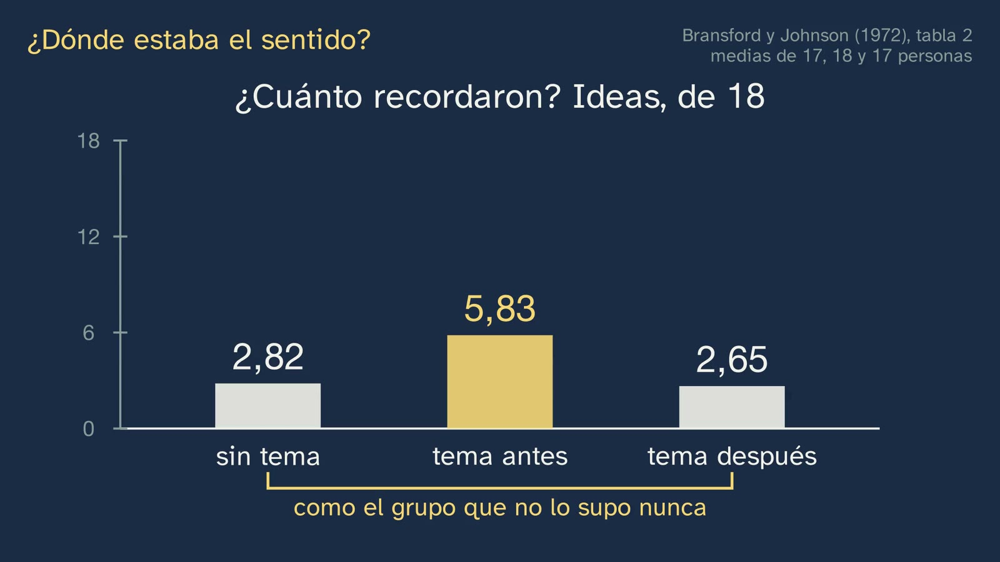
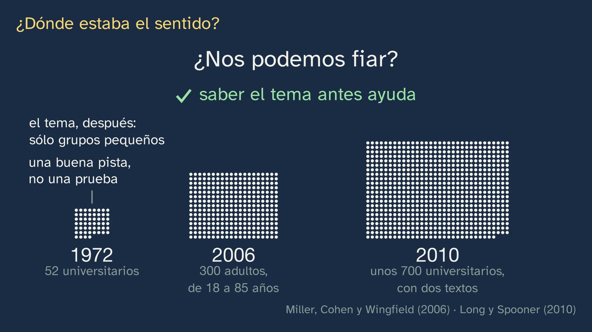
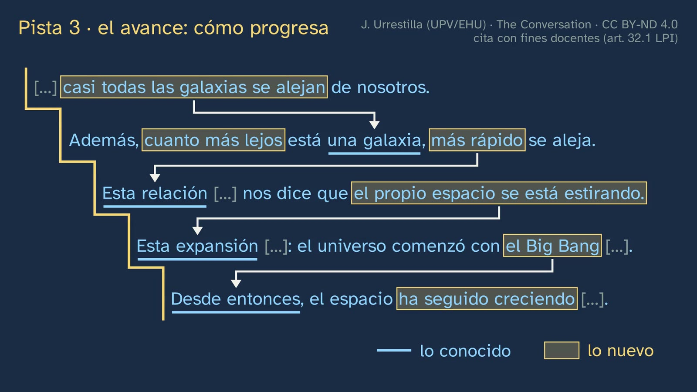
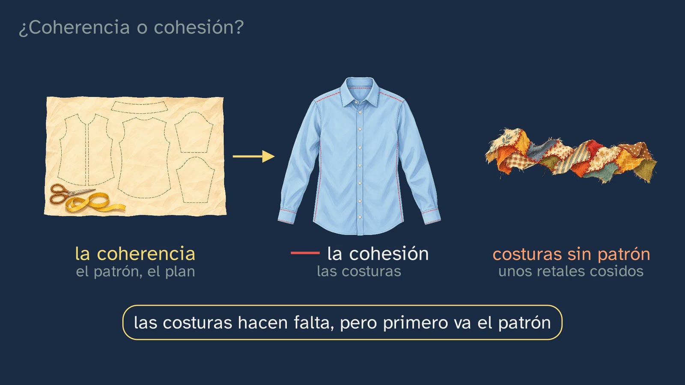
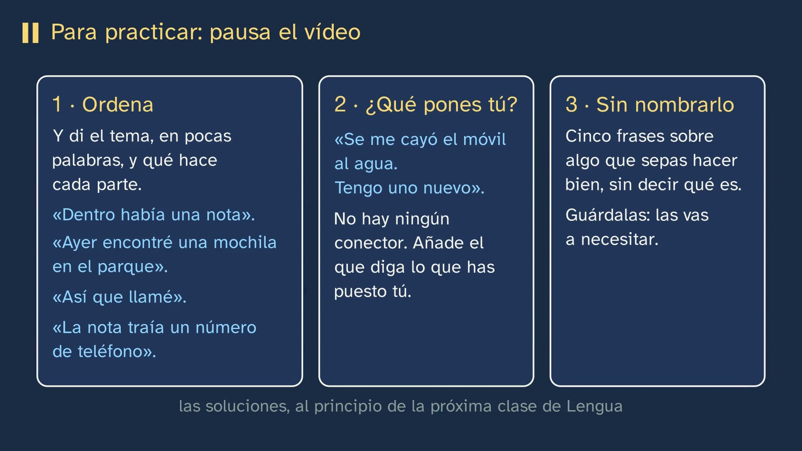

¿Dónde está el sentido de un texto?
En pocas palabras
La clase empieza con un experimento que hace el propio alumno. Oye, una sola vez, el principio de un texto sin una palabra difícil («En realidad, el procedimiento es bastante sencillo. Primero se ordenan las cosas en distintos grupos…») y le pone nota: del 1 al 7, ¿cuánto lo ha entendido? Cada frase se entiende; el texto, no. Entonces oye tres palabras, «lavar la ropa», y las mismas frases encajan a la primera. Las palabras no han cambiado. Entonces, ¿dónde estaba el sentido? La respuesta tiene dos mitades. Una: el sentido no viene entero en las palabras; lo construye quien lee, con las pistas del texto y con lo que ya sabe. Otra: por eso un buen texto deja tres pistas (de qué trata, cómo se ordena y cómo avanza), que la cohesión señala, pero no crea. El recorrido, en cinco pasos:
- Un texto que calla su tema, y el experimento de 1972. El texto es de Bransford y Johnson (1972, experimento II), en traducción nuestra. Lo oyeron una vez 52 universitarios, repartidos al azar en tres grupos: sin tema, con el tema antes y con el tema después. Con predicción del alumno: el grupo del «después» quedó como el que no lo supo nunca (2,12 y 2,29 sobre 7; con el tema antes, 4,50). Y con lo que vale la prueba: el original era pequeño; que el tema antes ayuda se ha repetido con 300 adultos y con unos 700 universitarios; lo del «después» es «una buena pista, no una prueba».
- El sentido lo construyes tú. Una parte está en el texto y otra la pone quien lee: es la inferencia de la clase 1, «a lo grande». Cuando el texto se entiende como un todo, es coherente, y la coherencia «la consiguen entre dos»: quien escribe, que deja las pistas, y quien lee, que pone lo que sabe.
- Tres pistas, sobre un texto real. Dos párrafos de un catedrático de Física en The Conversation. El tema: «La expansión del universo» («Las galaxias» se queda corto, «El universo» se pasa, y no es el título). La estructura: qué hace cada parte (lo que se observa, lo que significa, de dónde viene). Y el avance: cada frase se agarra a algo conocido y añade algo nuevo. Es la progresión temática de Daneš, dibujada como una escalera y como un peine. Con sus nombres: coherencia global y coherencia local.
- Coherencia no es cohesión. Tres textos las separan: el de la ropa, cosido de conectores, que sin tema no se entendía; uno inventado que repite una palabra en cada frase y no trata de nada; y dos frases sin un conector ni una palabra repetida que se entienden a la primera («No hubo paella. Nadie llevó el arroz»). Con Carrell (1982): «La cohesión no es la causa de la coherencia; si acaso, es su efecto». Y una imagen: las costuras y el patrón.
- ¿Más conectores, mejor texto? El error, con un párrafo inventado de cinco conectores que no cumplen lo que prometen, el par «Llovía, pero salimos» / «Llovía; por eso salimos» y un estudio de 120 redacciones en que las mejores no llevaban más conectores que las peores (McNamara, Crossley y McCarthy, 2010).
Qué aporta que no traen los libros ni los vídeos. En la revisión de referentes de la clase (71 vídeos de YouTube, 20/11/2026: 36 mirados fotograma a fotograma y 35 por sus subtítulos), el experimento de la colada sólo se hace vivir en inglés (Closed Stacks, 1,02 millones de vistas; Daniel Willingham, 371 mil; John Medina, 140 mil), y siempre para hablar de memoria o de técnicas de estudio, nunca en una clase de Lengua. En español, un vídeo lee tres frases y cuenta el resultado (MentesDePapel, 8:03–8:46). Al dar el título, a las palabras no les pasa nada en la pantalla: el texto vuelve a salir igual. La nota del 1 al 7 sólo la piden un canal de 721 vistas y una clase grabada de Cambridge (19 mil), que es también la única que hace predecir el «título después». Nadie dice que la muestra era pequeña ni habla de repeticiones. Las clases de Lengua con más vistas en español definen la coherencia como una propiedad del texto: un tema, un orden y que las ideas «no se deben contradecir» (Talía Lund, 554 mil); el lector no sale. Los vídeos de conectores dicen que dan «sentido al texto» (Aula365, 2,77 millones) o «mayor coherencia» (Maestra Belén Sánchez, 388 mil). Tema y rema sólo se dibujan en canales pequeños y con frases inventadas. Nadie demuestra con un texto, en español, que la cohesión no da coherencia, y nadie cita con su nombre un estudio sobre conectores y calidad. En el contraste con dieciséis proyectos editoriales de 1.º de Bachillerato (29 y 30/09/2026, sólo para comparar), ninguno hace el ciclo completo que pide la competencia 9 (pregunta, hipótesis, datos, análisis y conclusión): esta clase lo empieza y la 7, un laboratorio, lo cierra.
Un hallazgo de la verificación, antes de buscar el texto en internet. El artículo de 1972 trae dos versiones del texto de la colada (p. 722). El pasaje A, de 162 palabras, es el que oyeron los 52 universitarios de los tres grupos (experimento II), y es el que lee la clase. El pasaje B, de 180 palabras, que acaba con «After the procedure is completed one arranges the materials into different groups again…», lo oyeron 21 alumnos de instituto en el experimento III, que sólo tenía dos grupos. El que circula por internet es el B, que los autores volvieron a publicar en un capítulo de 1973 (p. 400). Quien lo pone junto a los tres grupos y las cifras 2,29, 2,12 y 4,50 mezcla dos experimentos.
Objetivo. Al terminar, el alumnado sabrá explicar la coherencia como algo que el lector construye con el texto y lo que ya sabe, enunciar el tema y la estructura de un texto, seguir cómo avanza su información y no confundir coherencia con cohesión.
Currículo
Real Decreto 243/2022, Lengua Castellana y Literatura I, materia común de 1.º de Bachillerato (texto consolidado del BOE, comprobado para el tema el 29 y el 30/09/2026 y para esta clase el 20/11/2026: su última actualización, del 02/07/2026, sólo toca el artículo 23.4, no el anexo de Lengua).
| Elemento | Qué dice el decreto | Dónde se trabaja |
|---|---|---|
| Saber básico (bloque B, «Comunicación», 2. Géneros discursivos) | «Propiedades textuales: coherencia, cohesión y adecuación.» | La coherencia, con su nombre, en 7:42, y en dos niveles: global (10:20) y local (12:02). La cohesión, en 12:14–14:45, sólo para separarla de la coherencia. Las tres propiedades, juntas, en el resumen (17:21). La adecuación fue la clase 5; los mecanismos de cohesión, uno a uno, van en el tema 7 |
| Saber básico (bloque B, 3. Procesos) | «Comprensión oral: sentido global del texto y relación entre sus partes, selección y retención de la información relevante. La intención del emisor. Detección de los usos discriminatorios del lenguaje verbal y no verbal. Valoración de la forma y contenido del texto.» | Sólo el sentido global y la retención: el texto oído una vez y puntuado (2:31–4:52), y un experimento que midió justo eso, cuánto se entendía y cuánto se recordaba de un texto oído (4:57–6:19). Lo demás de este saber no se toca |
| Saber básico (bloque B, 3. Procesos) | «Comprensión lectora: sentido global del texto y relación entre sus partes. La intención del emisor. Detección de los usos discriminatorios del lenguaje verbal e icónico. Valoración de la forma y contenido del texto.» | El sentido global, como tema (9:00–9:49); la relación entre las partes, como estructura (9:49–10:27) y como avance (10:27–12:14). La intención del emisor sólo asoma en «el título llama al lector» (9:42) y en la pregunta abierta (18:16) |
| Saber básico (bloque B, 4. Reconocimiento y uso discursivo de los elementos lingüísticos) | «Conectores, marcadores discursivos y otros procedimientos léxico-semánticos y gramaticales que contribuyen a la cohesión del texto.» | Tres familias, nombradas con sus ejemplos: las repeticiones, las palabras que señalan a lo ya dicho y los conectores (12:32–12:42). Qué hace un conector y qué no (14:45–16:26). El ejercicio 2 |
| Saber básico (bloque D, «Reflexión sobre la lengua») | «Elaboración de conclusiones propias sobre el funcionamiento del sistema lingüístico con un metalenguaje específico a partir de la observación, comparación y clasificación de unidades comunicativas y del contraste entre lenguas […]» | Tres textos comparados para sacar una conclusión (12:48–14:25); la prueba de leer sola una frase (11:50); el mismo par de hechos con dos conectores (15:34). El metalenguaje: tema, estructura, progresión temática, coherencia global y local, cohesión, conector |
| Competencia específica 2 | «Comprender e interpretar textos orales y multimodales, con especial atención a los textos académicos y de los medios de comunicación, recogiendo el sentido general y la información más relevante, identificando el punto de vista y la intención del emisor y valorando su fiabilidad, su forma y su contenido, para construir conocimiento, para formarse opinión y para ensanchar las posibilidades de disfrute y ocio.» | Su descripción dice que comprender es «un constante proceso de interpretación de intenciones en el que entran en juego el conocimiento compartido entre interlocutores y todos aquellos elementos contextuales y cotextuales que permiten ir más allá del significado del texto e interpretar su sentido»: es la tesis de la clase (0:33–0:54 y 7:09–7:42). Y cuenta entre las destrezas básicas «anticipar el contenido»: es lo que podía hacer el grupo del tema antes (5:56) |
| Competencia específica 4 | «Comprender, interpretar y valorar textos escritos, con sentido crítico y diferentes propósitos de lectura, con especial atención a textos académicos y de los medios de comunicación, reconociendo el sentido global y las ideas principales y secundarias, integrando la información explícita y realizando las inferencias necesarias, identificando la intención del emisor, reflexionando sobre el contenido y la forma y evaluando su calidad y fiabilidad, para dar respuesta a necesidades e intereses comunicativos diversos y para construir conocimiento.» | Un texto de un medio, desmontado (8:06–12:14). Su descripción pide estrategias para «salvar la distancia entre los conocimientos previos y los aportados por el texto» y avisa de que, sin las claves, «el lector queda limitado a la interpretación literal de lo dicho»: es lo que le pasa al alumno entre 2:31 y 3:43. Las inferencias: lo que pone el lector en la paella (13:58) y en el ejercicio 2 |
| Competencia específica 5 | «Producir textos escritos y multimodales coherentes, cohesionados, adecuados y correctos, con especial atención a los géneros discursivos del ámbito académico, para construir conocimiento y dar respuesta de manera informada, eficaz y creativa a demandas comunicativas concretas.» | En el vídeo, sólo como criterio para escribir: «escribir bien es pensar en quien te va a leer: decirle de qué va, ordenárselo, y enganchar cada cosa nueva a algo que ya tenga» (16:39). El ejercicio 3 son cinco frases; escribir un texto entero, en la clase 7 |
| Competencia específica 9 | «Consolidar y profundizar en el conocimiento explícito y sistemático sobre la estructura de la lengua y sus usos, y reflexionar de manera autónoma sobre las elecciones lingüísticas y discursivas, con la terminología adecuada, para desarrollar la conciencia lingüística, para aumentar el repertorio comunicativo y para mejorar las destrezas tanto de producción oral y escrita como de comprensión e interpretación crítica.» | Su descripción pide trabajar «a través de procesos de indagación», con «la formulación de hipótesis y de reglas, el uso de contraejemplos». Aquí, las predicciones antes de los datos (3:38 y 5:40), los contraejemplos (la bici y la paella, contra «cohesión es coherencia») y la terminología |
| Criterio 2.1 | «Identificar el sentido global, la estructura, la información relevante en función de las necesidades comunicativas y la intención del emisor en textos orales y multimodales complejos propios de diferentes ámbitos, analizando la interacción entre los diferentes códigos.» | En parte: el sentido global de un texto oído (2:31–4:52). La estructura de un texto oral no se trabaja; sí la de un texto escrito (criterio 4.1) |
| Criterio 4.1 | «Identificar el sentido global, la estructura, la información relevante y la intención del emisor de textos escritos y multimodales especializados, con especial atención a textos académicos y de los medios de comunicación, realizando las inferencias necesarias y con diferentes propósitos de lectura.» | De lleno: el tema (9:13–9:49), la estructura (9:49–10:27) y las inferencias que piden «esta relación» y «esta expansión» (10:45–10:55), en un texto de divulgación de un medio. El ejercicio 1 y la variante de la actividad |
| Criterio 5.1 | «Elaborar textos académicos coherentes, cohesionados y con el registro adecuado sobre temas curriculares o de interés social y cultural, precedidos de un proceso de planificación que atienda a la situación comunicativa, destinatario, propósito y canal y de redacción y revisión de borradores de manera individual o entre iguales, o mediante otros instrumentos de consulta.» | En parte: la clase da el criterio para planificar pensando en el destinatario (16:39) y encarga un texto corto (ejercicio 3). El texto académico, con su planificación y su revisión, es la clase 7 |
| Criterio 9.2 | «Explicar y argumentar la interrelación entre el propósito comunicativo y las elecciones lingüísticas del emisor, así como sus efectos en el receptor, utilizando el conocimiento explícito de la lengua y un metalenguaje específico.» | Elegir «pero» o «por eso», y lo que entiende quien lee en cada caso (15:34–15:47); callar el tema o decirlo, y su efecto (3:24–4:52); los ejercicios 1 y 2 |
| Criterio 9.3 (sólo en la actividad) | «Elaborar y presentar los resultados de pequeños proyectos de investigación sobre aspectos relevantes del funcionamiento de la lengua, formulando hipótesis y estableciendo generalizaciones, utilizando los conceptos y la terminología lingüística adecuada y consultando de manera autónoma diccionarios, manuales y gramáticas.» | El vídeo no lo declara. Lo trabaja la actividad de esta ficha: hipótesis, datos de la propia clase, recuento y lo que no se puede concluir. Es el criterio de la clase 7 |
Con qué palabras lo dice el decreto. En la parte de Lengua, el decreto no dice «tema» de un texto: dice «sentido global». No dice «progresión temática», ni «rema», ni coherencia «global» o «local». «Estructura» está en los criterios 2.1 y 4.1 y, en los saberes, como «relación entre sus partes». Los conectores sólo salen en el saber B.4, y ligados a la cohesión. El criterio 9.1, que la clase no declara, también encaja: pide «identificar y subsanar problemas de comprensión lectora utilizando los conocimientos explícitos sobre la lengua y su uso».
Lo que hay que traer. De la clase 1, la diferencia entre el significado (lo que dicen las palabras) y el sentido (lo que comunican en su situación), la inferencia y el conocimiento compartido («¿Vienes a la fiesta del sábado?» — «Tengo examen el lunes»): aquella clase lo vio en un enunciado; esta, en un texto entero. De la clase 5, la adecuación, y sus tres ejercicios, que se resuelven al principio (0:54–2:09). De la ESO, los mismos saberes: en 1.º y 2.º, y otra vez en 3.º y 4.º, las «Propiedades textuales: coherencia, cohesión y adecuación», la «Comprensión lectora: sentido global del texto y relación entre sus partes» y los «Mecanismos de cohesión»; en 3.º y 4.º, con los «Mecanismos de referencia interna, gramaticales y léxicos (nominalizaciones e hiperónimos de significado abstracto)», que es justo lo que son «esta expansión» y «esta relación» (Real Decreto 217/2022, Lengua Castellana y Literatura, bloque B).
Dónde vuelve. La clase 7, «Laboratorio: escribir para que te entiendan», repite el experimento con los lectores de cada alumno y con el texto de cinco frases del ejercicio 3, y trabaja el proceso de escritura del criterio 5.1. La cohesión, con sus mecanismos, tiene su tema: el 7 del plan, «La cohesión: lo que mantiene unido un texto» (las referencias, los sinónimos y la elipsis; los conectores y los marcadores; los tiempos verbales).
Cómo está construida la clase
Capítulos del vídeo
Casi diecinueve minutos, en once capítulos. Es una clase de teoría, con Vera, sin bata, a su mesa. Trabaja sobre dos textos reales, que no son nuestros: el pasaje del experimento de 1972, en traducción nuestra, y dos párrafos de un artículo de divulgación de 2026, literales. Todos los demás ejemplos (la bici, la paella, la gata, los móviles, la lluvia y los ejercicios) son inventados, y la pizarra lo dice. La hoja de cada texto lleva arriba un hueco, «¿de qué trata?», que vuelve cada vez que se busca un tema. En el avance, lo conocido va subrayado en azul y lo nuevo, marcado en amarillo. La cohesión va siempre con hilo rojo: las costuras, y los conectores, en pegatinas de borde rojo.
| Capítulo (minuto) | Qué hace | Base formativa |
|---|---|---|
| Qué vamos a ver (0:00) | Vera saluda; el mapa del tema, con la quinta clase un momento y la sexta resaltada (0:07). La clase anterior, con su nombre: la adecuación (0:11) | Saber dónde se está (aprendizaje multimedia: señalización) |
| Lo que ya sabes (0:20) | De la clase 1: el significado y el sentido, ¿qué era cada uno? Las dos tarjetas salen vacías (0:30; silencio corto, sin contador). Después se llenan, con «¿Tienes hora?», y entre ellas, la flecha de la inferencia: «un paso que da quien escucha» (0:33–0:54) | Recuperar (Roediger y Karpicke, 2006), con la pregunta a la vista |
| Las soluciones (0:54) | Los tres ejercicios de la clase 5, cada uno con su enunciado en gris: el aviso por megafonía, con el campo, el tenor y el modo (0:54); la frase formal, pero clara (1:25); y tú o usted con la vecina, el monitor y la entrevista (1:46) | Espaciar; las soluciones, cortas y con su enunciado |
| Un texto que calla su tema (2:09) | El gancho, vivido. La hoja está desde el principio, con el hueco del tema vacío y el anuncio dentro: «te leo el principio de un texto», «una sola vez», «ni una palabra difícil». Vera lee el principio del texto, que se teclea en la hoja (2:31). La nota, del 1 al 7, de «nada» a «todo» (3:09; contador en 3:19). «Cada frase, sí» y «el texto, no» (3:26), y la predicción: ¿te subirá la nota? (3:38; contador en 3:39). El tema llena el hueco, «lavar la ropa»; la hoja encoge, y cada frase vaga encuentra su dibujo: los tres montones, la lavandería, la lavadora llena y la camiseta rosa (3:43–4:18). El final del texto, ya con el tema, y la segunda nota, en una escala grande con «antes: ?» y «ahora: ?» (4:19; contador en 4:49). Vera, a cámara: «Las palabras eran las mismas. Entonces, ¿dónde estaba el sentido?» (4:52) | El gancho, con su contexto; el problema antes que la explicación (Sinha y Kapur, 2021); predecir antes de ver; participar, no sólo mirar |
| El experimento de 1972 (4:57) | El estudio se presenta en el centro, con su año («1972 · un experimento de psicología»), sus dos autores y su universidad, y pasa a la esquina como ficha. Entran 52 puntos, uno por persona, junto a una hoja con ondas («una sola vez»), y se reparten en tres grupos (17, 18 y 17). Cada grupo, en su fila (sin tema, tema antes y tema después), con tres columnas: antes, lo oyen una vez y después (4:57). La predicción se hace sobre ese mismo diseño: un marco amarillo en la fila «tema después», un «?» y dos flechas hacia las otras dos filas (5:40; contador en 5:47). Las barras salen de cero: la nota (2,29, 4,50, con «casi el doble», y 2,12) y, después, las ideas recordadas, de 18 (2,82, 5,83 y 2,65), con una llave de la primera a la tercera, «como el grupo que no lo supo nunca» (5:52). «¿Nos podemos fiar?», en grande, con tres nubes de puntos, de 52, 300 y unos 700 personas, y el visto de «saber el tema antes ayuda» (6:19). Por qué no serviría saberlo después: con el tema antes, las frases se montan; con el tema después, quedan sueltas, y la tarjeta «lavar la ropa» llega tarde (6:45) | ¿Cómo lo sabemos?, con la prueba y su límite; predecir antes de ver (White y Gunstone, 1992) |
| El sentido lo construyes tú (7:09) | La hoja a un lado, la lectora con su nube al otro, y en medio, un hueco con su «?» que se llena pieza a pieza: tres piezas llegan de la hoja y tres de la nube, donde salen la lavadora, los montones y la camiseta con el calcetín rojo, cada cosa con su palabra (7:09). La palabra: «coherente · se entiende como un todo»; y quien escribe, que entra a la izquierda y «deja las pistas» (7:42). Vera, a mitad: «un texto no lleva dentro todo su sentido. Cuenta contigo» (8:00) | Primero la intuición, después lo exacto |
| Tres pistas: tema, estructura y avance (8:06) | Un texto real: mientras se presenta, la hoja vacía dice quién lo escribe y para quién; después se lee y se teclea frase a frase (8:23). Pista 1, el tema: para y piensa (9:13; contador en 9:17); «Las galaxias» y «El universo» prueban suerte, cada uno con su marca sobre la hoja: una llave que «sólo cubre el principio» y una flecha de arriba abajo, «ahí cabe cualquier cosa» (9:24); el tema no es el título (9:34). Pista 2, la estructura: tres llaves, cada una con lo que hace su parte, y la coherencia global (9:49). Pista 3, el avance: los ganchos van de lo nuevo de una frase a lo conocido de la siguiente, y las frases bajan en escalera (10:27); su nombre, progresión temática, con la escalera a un lado y, al otro, el peine, con «Mi gata» (11:13); la prueba de la frase sola y, al final, juntas, la coherencia local, la global, que vuelve de recuerdo, y la no contradicción (11:50) | Textos reales como modelo: desmontar (Rose y Martin, 2012); una pista cada vez (segmentación); para y piensa |
| Coherencia no es cohesión (12:14) | «El avance está en las ideas» y «lo que se ve: las palabras que lo marcan»: los cuatro ganchos del texto real son mecanismos de cohesión, con sus tres familias (12:14). Después, tres ejemplos con el mismo marcador, «¿costuras?» y «¿se entiende?». La hoja de la ropa vuelve, con sus cinco conectores rodeados: costuras, sí; se entiende, no (12:48). El texto de la bici, cosido palabra a palabra, con contador (13:28): también sí y no (13:31). La paella sin arroz: no y sí; y la cita de Carrell, tecleada (13:46). Las costuras y el patrón, en tres dibujos: el patrón de papel, la camisa con sus costuras y los retales (14:25) | Comparar en paralelo tres casos; contraejemplos (competencia 9) |
| ¿Más conectores, mejor texto? (14:45) | La idea, grande y sola, «más conectores = mejor texto», se tacha («es un error») y sube, tachada, a la cabecera; el párrafo de los móviles, con cada conector como una pegatina y una cuenta que crece hasta «5 conectores» (14:55; contador en 15:16). «Un conector es una promesa»: las promesas no se cumplen, las pegatinas se sueltan y queda «las ideas no tienen esa relación» (15:19); «Llovía, pero salimos» y «Llovía; por eso salimos», y lo que hace ahí el conector: «le dice a quien lee qué relación has pensado tú» (15:34); «un conector señala la relación; no la crea» (15:55). Las 120 redacciones y las trece maneras de contar conectores: «13 de 13», «sin diferencia significativa entre las mejores y las peores» (15:59) | El error, a la vista, desmontado razonando (Muller y otros, 2008); ¿cómo lo sabemos? |
| ¿Dónde está el sentido? (16:26) | La respuesta entera a la pregunta del título: las piezas del sentido vuelven a llegar de la hoja y de la nube; y lo que supone para quien escribe: tres pistas que dejar (16:26). El resumen, avisando de que se repite, en cuatro cajas (la segunda: «coherencia global: tema y estructura. Local: el avance»), y las tres propiedades del texto (16:50) | Cerrar el gancho; espaciar |
| Para practicar y seguir pensando (17:28) | Los tres ejercicios, en tres fichas que se llenan al leerse (17:28); la pregunta abierta, con una hoja entre quien escribe y quien lee (18:16; contador en 18:28); la próxima clase (18:33); la despedida (18:43) | Recuperar; la pregunta abierta (artículo 9 de la Constitución del canal) |


Plan de una sesión de 50 minutos
El experimento con el texto de la ropa sólo se puede hacer antes de ver el vídeo: después, toda la clase sabe el tema. Por eso el plan empieza sin vídeo y sin decir de qué va la clase.
| Minutos | Qué se hace |
|---|---|
| 0–10 | Sin vídeo: el experimento con dos mitades (la actividad de esta ficha, pasos 1 a 5). En los dos minutos de espera, la tabla de «Antes de empezar» de la hoja. Se recogen las hojas del recuerdo. |
| 10–16 | Vídeo de 0:00 a 4:57. Quien tenía el tema en su papeleta no lo dice. En 0:30 basta el silencio del vídeo; en 3:19, 3:39 y 4:49, su contador (preguntas 1 y 2 de la hoja). En 4:57, con la pregunta de Vera, parar: cada cual escribe en una línea dónde estaba el sentido (pregunta 3) y lo guarda para el final. |
| 16–19 | Vídeo de 4:57 a 7:09. Parar en 5:47: a mano alzada, ¿a cuál se parecerá el grupo del «después»? Se apuntan en la pizarra los tres recuentos (como el de «antes», como el de «sin tema», en medio) y se sigue. |
| 19–28 | La actividad, pasos 6 a 8: la hipótesis para la propia clase, el recuento y lo que no se puede concluir. |
| 28–42 | Vídeo de 7:09 al final (18:53). En 9:17, 13:28 y 15:16 basta el contador (preguntas 7, 10 y 11). Si se quiere más tiempo para el tema, parar en 9:17 y apuntar tres o cuatro propuestas en la pizarra antes de seguir: luego se ve cuál se queda corta y cuál se pasa. Los ejercicios, para casa: sus soluciones abren la clase 7, y el tercero es su material. |
| 42–50 | La pregunta abierta, en debate (pistas en «Para seguir pensando»). Y vuelta a la línea del minuto 4:57 y a la tabla de «Antes de empezar»: ¿la cambiaría alguien? |
Si la clase no hizo los ejercicios de la clase 5, el vídeo se puede empezar en 2:09. Si el alumnado ha visto el vídeo en casa, el experimento ya no sirve con este texto: en su lugar, la variante de la actividad (desmontar otro texto real).
Errores típicos y cómo se tratan
Con una advertencia honesta, como en las otras fichas del tema: ninguno de estos errores está medido con alumnado español de Bachillerato. Los dos primeros son los que la ficha del tema prevé para esta clase; los demás circulan en vídeos con cientos de miles de vistas o son previsibles por lo que la clase enseña, y se dice de dónde sale cada uno. Las citas de vídeos salen de sus subtítulos automáticos (revisión de referentes del 20/11/2026), con su minuto.
- «Más conectores, mejor texto». Lo que circula: los conectores relacionan las ideas «dando sentido al texto» (Aula365, 2,77 millones de vistas, 0:16); «un buen uso de los conectores le da una mayor coherencia a nuestro discurso» (Maestra Belén Sánchez, 388 mil, 0:17); para unir los párrafos, «lo más importante son los conectores», y hay que usar «un montón» (LenGuay, 321 mil, 3:40 y 4:01). Lo que hay en contra: en 120 redacciones de universitarios de primer curso de Estados Unidos, puntuadas por expertos, ninguno de los 13 índices de conectores distinguió las buenas de las malas ni correlacionó con la nota, y tampoco ninguno de los 13 de correferencia (McNamara, Crossley y McCarthy, 2010, pp. 68 y 73). El mismo equipo encontró algo parecido con otras 184 y otras 315 redacciones: lo que pesaba en la nota era la coherencia que veía el corrector, no los índices de cohesión (Crossley y McNamara, 2010 y 2011). Son tres estudios de un solo equipo y de una sola universidad, en inglés: un resultado sólido dentro de ese marco, no una ley. En español no hemos encontrado ningún estudio que compare textos buenos y malos por su número de conectores. Lo que hay en español es otra cosa, y son pistas, porque las muestras son pequeñas: en redacciones de 60 universitarios costarricenses, los conectores se usan poco y se repite siempre el mismo (Sánchez Avendaño, 2005, pp. 169 y 195); en 197 textos de 36 alumnos de secundaria de un colegio chileno, de 100 errores con conectores causales, el 86 % era de omisión (Montero y Ferreira, 2025, pp. 160 y 175). La clase plantea el error en 14:45, lo desmonta razonando (un conector es una promesa, 15:20; «señala la relación; no la crea», 15:55) y con el dato (15:59). Y el error de vuelta: «los conectores sobran». No: la clase lo dice dos veces («las costuras hacen falta», 14:38; «eso no quiere decir que los conectores sobren», 16:18). En escritores jóvenes, los enlaces sí van con la calidad, y unir bien unos párrafos con otros, también (Crossley, 2020, pp. 426–427). Y en la PAU de Andalucía se puntúa «el empleo adecuado de los marcadores discursivos», no su número.
- «El sentido está en las palabras», o «si conozco todas las palabras, entiendo el texto». Es el error de fondo del tema: creer que comunicar es cifrar y descifrar. Lo más cercano medido en España es sobre la escritura: en 1.º de Bachillerato, la idea de que escribir es transmitir información puntuó 4,04 sobre 6, casi tanto como la de que escribir es construir conocimiento, 4,24 (Villalón y Mateos, 2009, con 163 alumnos; el dato, de la tesis de Villalón, UAM, 2010, tabla 6, que no hemos vuelto a abrir para esta clase). El texto de la ropa lo desmonta en dos minutos: no tiene una palabra difícil, y sin tema no se entiende (3:26–3:32). El decreto avisa de lo mismo: sin las claves, «el lector queda limitado a la interpretación literal de lo dicho» (competencia 4). La clase lo contesta en 7:09 y lo fija con la frase de Vera a mitad: «un texto no lleva dentro todo su sentido. Cuenta contigo» (8:00).
- «Coherente es que no se contradiga», o «que tenga lógica». Es como se define en las clases de Lengua con más vistas: «las ideas no se deben contradecir» (Talía Lund, 554 mil, 0:50); «no tiene que tener contradicciones internas» (Educatina, 245 mil, 0:57); «principio de no contradicción» (Clases Particulares en Ávila, 226 mil, 2:36). No es falso: es una condición (la tercera metarregla de Charolles, 1978, p. 22; y en el CVC, los conceptos del texto «no contradicen el conocimiento del mundo que tienen los interlocutores»). Pero no basta: el texto de la ropa no se contradice en nada, cada frase es lógica, y sin tema nadie lo entiende. La clase deja la no contradicción en su sitio, al final de las tres pistas: «una condición más, de sentido común» (12:06). Ojo con los ejemplos de frases sueltas absurdas («El gato ladraba en el tejado», Profe Mónica, 2:48): enseñan que una frase choca con lo que sabemos del mundo, no qué hace coherente a un texto.
- «El tema es el título», o la primera frase, o un resumen. En vídeos: «el tema generalmente es reconocible, pues este se encuentra presente en el título de los textos» (Puntaje Nacional Chile, 430 mil, 0:44). A veces coincide; muchas, no. El título del artículo de la clase es una pregunta, «¿Por qué el universo no deja de crecer?», y su tema, «La expansión del universo»: «el título llama al lector; el tema dice de qué trata el texto» (9:34–9:47). Sobre la forma del tema, las recetas de los vídeos se contradicen: una frase «con su sujeto, verbo, complemento» (Arantxa Tarrero, 52 mil, 1:05–2:09); «siempre se enuncia con un sintagma nominal» (LenGuay, 162 mil, 1:45); una frase nominal sin «un verbo conjugado» (Pepe Ríos, 285 mil, 3:03–3:24). Coinciden en lo que importa: breve y concreto. La clase dice «en muy pocas palabras, y sin verbo conjugado: como "lavar la ropa"» (9:07), y da una prueba mejor que cualquier receta: que cubra todo el texto y nada más («Las galaxias» se queda corto; «El universo» se pasa, 9:24–9:32). Donde la PAU lo ha pedido con ese nombre (Madrid, modelo de 2025-2026), era «de manera concisa en una o dos líneas».
- «El tema es el sujeto», o lo primero de la frase. Es otro «tema»: el de tema y rema, el punto de partida de cada frase. La clase avisa: «Ojo: aquí "tema" es el punto de partida de cada frase, no el tema del texto» (11:18). En vídeos: el tema «suele coincidir con el sujeto» y el rema «con el predicado» (Javier Lengua, en su vídeo de tema y rema, 1:20); «TEMA: la primera información» (PERUANO ESPAÑOL, 51 mil, 1:52). Para el Glosario de la RAE, el tema es lo que el emisor «presenta como conocido por el destinatario», y «típicamente» encabeza la oración: típicamente, no siempre. Dos contraejemplos a mano. En el ejercicio 1, «Dentro había una nota»: lo conocido es «Dentro» (de la mochila), y el sujeto, «una nota», es lo nuevo. Y en el texto de la variante de la actividad, «Los perros son un ejemplo de ello»: lo nuevo va delante y lo conocido, «ello», detrás.
- «Decir la estructura es contar los párrafos», o meter cualquier texto en «introducción, desarrollo y conclusión». No está en los vídeos mirados: es previsible. El texto de la clase tiene dos párrafos y tres partes, y la clase lo dice con estas palabras: «decir la estructura no es contar párrafos: es decir qué hace cada parte» (10:15). Es lo que piden las pruebas de acceso: en Andalucía, «indicar razonadamente su estructura»; en el modelo de Madrid de 2026-2027, «Determine la estructura interna del texto escogido y relaciónela con su tipología textual».
- «Coherencia y cohesión son lo mismo», o «sin cohesión no hay coherencia». En vídeos: «para que exista coherencia debe haber cohesión; sin cohesión no hay coherencia» (Alejandro Rubio, 24 mil, 2:29); «son como siameses» (LenGuay, 49 mil, 9:00); la cohesión es la propiedad que «le proporciona sentido tanto a los enunciados como al conjunto de estos» (Talía Lund, 1:26–1:32). El Centro Virtual Cervantes dice otra cosa: «La cohesión no es una propiedad necesaria ni suficiente de la textualidad; esta depende en última instancia de la coherencia» («Cohesión», Diccionario de términos clave de ELE). La clase las separa con tres textos (12:48–14:25): cosido y sin entenderse (la ropa, sin tema), cosido y sin tema (la bici), y sin un conector ni una palabra repetida, pero coherente (la paella). En la pizarra, los tres llevan el mismo marcador: «¿costuras?» y «¿se entiende?». En el aula, el riesgo es una confusión más fina: la coherencia local («cada idea encaja con la anterior», 12:02) y la cohesión («lo que ata unas frases con otras, a la vista», 12:28) se parecen. La frase de la clase que las separa: «El avance está en las ideas. Lo que se ve son las palabras que lo marcan» (12:14). Más, en «Para el profesorado».
- «Si no lo entiendo, el texto es malo», o, al revés, «si no lo entiendo, es culpa mía». Ninguna de las dos, sin más: la coherencia «la consiguen entre dos» (7:51). El mismo texto puede ser coherente para un lector y no para otro: «un discurso puede resultar incoherente para un destinatario porque carece del conocimiento del mundo necesario para comprender acertadamente dicho mensaje» (CVC, «Conocimiento del mundo»). La clase enseña los dos casos. En el texto de la ropa, la llave le faltaba a quien leía. En el de la bici, «no te falta nada a ti: el tema no lo tiene el texto» (13:39). Para quien lee, la salida es la que pide el decreto: estrategias para «compensar la falta de los conocimientos previos requeridos por un determinado texto» (competencia 4), empezando por averiguar de qué trata antes de leerlo. Para quien escribe, la de 16:39: pensar en quien te va a leer. Y el error de vuelta: «si el sentido lo pongo yo, cualquier lectura vale». No: el sentido se construye «con las pistas del texto» (16:36), y hay lecturas que el texto no sostiene, como hay temas que se pasan o se quedan cortos. Hasta dónde llega esa libertad es la pregunta abierta, y el profesor no la cierra.
- El experimento, mal contado. Circula mucho, en vídeos y en materiales, y con errores:
- El texto que circula no es el de los tres grupos: es el pasaje B, del experimento III (arriba, «En pocas palabras»). Circula además retocado: con «items» por «things», o sin su «actually» inicial.
- «Lo leyeron». Lo oyeron, una sola vez, leído en voz alta por el experimentador: «a single auditory presentation of the materials» (p. 722). Un vídeo de 108 mil vistas dice «They gave people a short paragraph to read» (be.minimal, 2:10). Las repeticiones grandes sí son de lectura.
- «Les dieron un título». Les dijeron de qué trataba, con una frase escrita en su hoja de instrucciones: «The paragraph you will hear will be about washing clothes» (p. 722). Los autores hablan de «topic», no de «title»; por eso la clase dice «tema», que es además lo que luego se aprende a enunciar.
- «El tema, después, no sirve nunca». En el experimento II, el grupo del «después» quedó como el de «sin tema». Pero los autores sólo contrastaron el grupo de «antes» con cada uno de los otros dos (p. 723): que «después» y «sin tema» son iguales se ve en las medias, no en una prueba estadística. Y en el experimento IV del mismo artículo, el tema dado después subió la nota de comprensión (3,82 frente a 2,44), aunque no el recuerdo (3,18 frente a 3,22). Todo, con grupos de 9 a 18 personas. La clase lo dice así: «una buena pista, no una prueba» (6:41).
- «Sin tema no se queda nada». Con 152 universitarios en tres experimentos, el título mejoró la comprensión y el recuerdo libre, pero no el reconocimiento (Alba y otros, 1981; sólo hemos leído su resumen). Sin tema, las frases entran; lo que falta es montarlas. La clase: «sueltas se quedaron» (6:59).
- «Se entiende el doble». En 1972, casi: 4,50 frente a 2,29. En las repeticiones grandes, menos: 0,26 frente a 0,15 de las ideas (Miller, Cohen y Wingfield, 2006), y 0,59 frente a 0,42 (Long y Spooner, 2010, experimento 1). Y aun con el tema antes, en 1972 se recordaron 5,83 ideas de 18: un tercio.
- Las exageraciones. Que el experimento «changed educational neuroscience», o que «Neurobiology shows…» (be.minimal, 1:26 y 7:55): es psicología de 1972, sin ningún cerebro medido. Y no hay que confundirlo con el texto de los globos, del mismo artículo, que se entiende con un dibujo, no con un tema (experimento I).
Preguntas y soluciones
Para y piensa (dentro del vídeo)
- En la clase 1 separamos el significado y el sentido. ¿Qué era cada una? (0:30; silencio corto, sin contador) El significado es lo que dicen las palabras; el sentido, lo que comunican en su situación. Por la calle, «¿Tienes hora?» no pregunta si llevas reloj: pide que digas la hora. Y del uno al otro se llega con una inferencia: un paso que da quien escucha. El vídeo contesta en 0:33. Valen «lo literal y lo que se quiere decir» o «lo que pone y lo que se entiende». Son las palabras del decreto: ir «más allá del significado del texto e interpretar su sentido» (competencia 2).
- ¿Qué nota le pones? (3:09; el contador, en 3:19) No tiene solución: es el dato de cada cual. Lo esperable es una nota baja, y el vídeo lo da por hecho («Seguramente, una nota baja», 3:24). Si alguien pone un 6 o un 7, conviene preguntarle de qué trata el texto: o ha dado con el tema, y entonces tenía la llave, o está puntuando que entiende cada frase, que es justo lo que la clase separa en 3:26 («cada frase, sí» y «el texto, no»). Dos diferencias con el experimento, para no comparar lo que no se puede. En 1972, la escala iba de «muy difícil de comprender» (1) a «muy fácil» (7), con «moderado» en el 4 (p. 720). Y los participantes oyeron el texto entero y en inglés; el alumno ha oído ocho de sus doce frases, traducidas.
- ¿Te subirá la nota? (3:38; el contador, en 3:39) Es una predicción, y el vídeo no la contesta con palabras: la contesta el propio alumno con su segunda nota. Lo interesante es el porqué que dé antes de ver: «porque sabré de qué habla» ya es media respuesta a la pregunta de la clase.
- Esta vez, con el tema delante, ¿lo has entendido a la primera? Ponle nota otra vez. (4:42; el contador, en 4:49) Su segunda nota. El vídeo no dice qué ha pasado con ella: lo da por hecho en la frase de Vera («Las palabras eran las mismas», 4:52). En el aula, a mano alzada: ¿a cuántos les ha subido? Ojo: las dos notas del alumno no son el experimento. Él ha releído el principio con sus dibujos y ha oído el final con el tema. En 1972 cada persona estuvo en un solo grupo, y es lógico: una vez sabido el tema, ya no se puede volver a no saberlo. Sus dos notas no se comparan con el 2,29 y el 4,50.
- Entonces, ¿dónde estaba el sentido? (4:54; Vera, a cámara) Es la pregunta de la clase. Se contesta en dos veces, y la voz lo avisa. «Ya podemos empezar a contestar» (7:09): «Una parte, en el texto. Y otra, en ti: en todo lo que sabes de lavar la ropa». Y «Ya podemos contestar del todo» (16:26): «No está entero en sus palabras. Lo construye quien lee, con las pistas del texto y con lo que ya sabe». Si en el aula se escribe una respuesta en el minuto 4:57, es previsible que salgan «en el tema», «en mi cabeza» o «en las palabras» (no lo hemos probado). La más tentadora es «en el tema», y no: el tema son tres palabras. Lo que hacen esas tres palabras es dejar entrar todo lo que el lector sabe de lavar la ropa.
- El grupo que supo el tema después, ¿a cuál se parecerá? ¿Al que lo supo antes, o al que no lo supo nunca? (5:40; el contador, en 5:47) Al que no lo supo nunca: 2,12 de nota media, frente a 2,29 sin tema y 4,50 con el tema antes; y 2,65 ideas recordadas de 18, frente a 2,82 y 5,83 (tabla 2, p. 723). El vídeo contesta en 6:00, y da la explicación de los autores en 6:45: lo que ya sabes sólo ayuda si lo tienes presente mientras escuchas (resumen nuestro de la p. 724). Es fácil que muchos apuesten por «en medio»: en la única clase grabada que hemos visto pedir esta predicción, el público apostó a que el grupo del «después» quedaría entre los otros dos (una clase de muestra de la Universidad de Cambridge, 5:30–6:45). Lo que no dice el dato: que saber el tema después no sirva nunca (error 9). Lo que importa no es acertar, sino haber predicho antes de ver.
- ¿Cuál es el tema de este texto? (9:13; el contador, en 9:17) «La expansión del universo». El vídeo contesta en 9:22. Valen «El universo en expansión», «El origen y la expansión del universo» o, más preciso, «La prueba y el origen de la expansión del universo». Se quedan cortos «Las galaxias» (sólo las dos primeras frases), «La ley de Hubble» (sólo la tercera) y «El Big Bang» (sólo las dos últimas). Se pasan «El universo», «El espacio» o «La astronomía». «El universo se expande» dice lo mismo, pero es una afirmación entera, con su verbo en forma personal: como idea vale, y como enunciado del tema se le pide la forma corta. La prueba para el aula es la del vídeo: ¿cubre las cinco frases, y nada más?
- «Esta relación se conoce como ley de Hubble». ¿Qué relación? (11:56; de paso, sin pausa) La que acaba de decir la segunda frase: cuanto más lejos está una galaxia, más rápido se aleja. «Esta relación» es un nombre con demostrativo que recoge esa frase entera, y sin ella no señala a nada: «su gancho se queda en el aire» (12:00). Es la prueba de que cada frase se apoya en la anterior, y sirve con cualquier texto: se lee una frase suelta y se mira qué palabra se queda sin dueño.
- «Ayer me compré una bici. Las bicis tienen dos ruedas…». Pero ¿de qué trata? (13:26; el contador, en 13:28) De nada (13:31). Cada frase repite una palabra de la anterior, y cada una, por separado, se entiende; pero no hay un tema que las cubra todas. Si alguien contesta «de una bici», «de cosas redondas» o «de la Luna», se le aplica la prueba del minuto 9:24: cada respuesta cubre una o dos frases, y se queda corta. Si alguien contesta «de lo que se le va ocurriendo a alguien que mira por su ventana», ha hecho algo interesante: le ha buscado al texto un tema que el texto no da. Es lo que contaron los participantes de 1972 que no sabían el tema: buscaron «a situation that the passage might be about» (pp. 724–725). Quien lee siempre intenta construir un sentido.
- Lleva cinco conectores. ¿Es un buen texto? (15:15; el contador, en 15:16) No (15:19). Cada conector promete una relación que las ideas no tienen: «sin embargo» promete un contraste y «por lo tanto», una consecuencia, y aquí no se cumple ninguna. Puede pasar que alguien le encuentre sentido a un trozo: «tienen cámara; por lo tanto, mi primo se ha comprado uno». Está haciendo lo que la clase dice que hace quien lee: poner lo que el texto no trae. La pregunta que hay que devolverle es qué dice el texto, y el texto no dice que el primo quisiera una cámara. Para el aula, lo que el vídeo no hace: arreglarlo. Con las mismas ideas, puestas en orden, sobran casi todos los conectores. Por ejemplo, en una versión nuestra: «Los móviles son muy útiles: sirven hasta de cámara. Sin embargo, en mi instituto están prohibidos». Queda un conector, y cumple lo que promete.
- Si el sentido lo construye quien lee, ¿puede un texto decir algo que quien lo escribió no quiso decir? ¿Tú qué crees? (18:22; el contador, en 18:28) Sin veredicto (artículo 9 de la Constitución del canal). Las dos posturas, con su mejor argumento, y las pistas para el debate, abajo, en «Para seguir pensando».




De la hoja del alumnado
- Antes de empezar. No hay solución: es lo que cree cada cual antes de la clase. Al final, lo que la clase dice de cada fila. Que no tenga palabras difíciles ayuda, pero no basta: el texto de la ropa no tenía ninguna (2:22). Los conectores señalan, y no por llevar más se entiende mejor (12:50 y 15:59). Que no se contradiga es una condición, no la definición (12:06). Que se sepa de qué trata es la primera pista (9:00), y lo que lo cambió todo en el gancho (3:43). Que las ideas vayan en orden es la segunda (9:49). Y que quien lee sepa algo del asunto es media respuesta (7:09): es la única de las seis que no depende sólo de quien escribe. Por eso escribir bien es pensar en quien va a leer (16:39). Lo que no se puede concluir del recuento de la clase: qué cree «el alumnado». Es un grupo, y la tabla sugiere las respuestas.
- Mientras ves el vídeo.
- El significado, lo que dicen las palabras; el sentido, lo que comunican en su situación (0:33).
- Sus dos notas. No han cambiado las palabras: ha cambiado que ahora sabe de qué trata, y con eso entra lo que sabe de lavar la ropa. «Las cosas» son la ropa; «otro sitio», la lavandería; «un error», un calcetín rojo entre la ropa blanca (3:49–4:18). Esas glosas son de la clase, no de los autores.
- La suya, la que sea. Al final, comparada con la de la clase (16:26).
- Su apuesta. La respuesta: al que no lo supo nunca. Nota media, sobre 7: 2,29 sin tema, 4,50 con el tema antes y 2,12 con el tema después (5:52–6:06).
- De que saber el tema antes ayuda: se ha repetido con cientos de personas (300 adultos y unos 700 universitarios). Lo del tema después sólo se ha visto con grupos pequeños: «una buena pista, no una prueba» (6:19–6:45).
- Una parte, en el texto; otra, en quien lee: en lo que sabe (7:14–7:20). Un texto es coherente cuando se entiende como un todo (7:43). Los dos son quien escribe, que deja las pistas, y quien lee, que pone lo que sabe (7:51–7:58).
- «La expansión del universo» (9:22). «Las galaxias» se queda corto: sólo cubre el principio. «El universo» se pasa: ahí cabe cualquier cosa. El título, «¿Por qué el universo no deja de crecer?», llama al lector; el tema dice de qué trata el texto (9:24–9:47).
- La primera dice lo que se observa: las galaxias se alejan, y más rápido cuanto más lejos están. La segunda, lo que eso significa: el espacio se estira. La tercera, de dónde viene: del Big Bang (9:59–10:14). Las mejores respuestas no dicen «primer párrafo» y «segundo párrafo»: dicen qué hace cada parte.
- «una galaxia», «Esta relación», «Esta expansión» y «Desde entonces» (10:37–11:01). La escalera: lo nuevo de una frase es el punto de partida de la siguiente. El peine: todas las frases parten de lo mismo, y cada una le cuelga algo nuevo («Mi gata es negra. Duerme todo el día. Odia el agua», 11:42). La frase sola se queda sin gancho: ¿qué relación? (11:56).
- El de la ropa, sin tema: cosido con conectores («primero», «claro que», «es decir», «pero», «además»), y no se entendía, porque a quien leía le faltaba el tema (12:48). El de la bici: cosido con una palabra repetida en cada frase, y no trata de nada; el tema no lo tiene el texto (13:31). La paella: ni un conector ni una palabra repetida, y se entiende, porque una paella lleva arroz, y eso ya lo sabíamos (13:54). La conclusión: la cohesión sola no basta; «las costuras hacen falta, pero primero va el patrón» (14:38).
- No. «Sin embargo» promete un contraste y «por lo tanto», una consecuencia, y las ideas no tienen esa relación (15:23–15:32). Con «pero», salimos a pesar de la lluvia; con «por eso», salimos por ella. Cambia el conector y cambia lo que se dice (15:34–15:42).
- Que las mejores redacciones no llevaban más conectores que las peores, contados de trece maneras (16:01–16:17). No quiere decir que sobren: quiere decir que primero va el plan y, después, la señal (16:18–16:24).
Para practicar (las soluciones abren la clase 7)
- Ordena estas cuatro frases, di el tema en pocas palabras y di qué hace cada parte: «Dentro había una nota». «Ayer encontré una mochila en el parque». «Así que llamé». «La nota traía un número de teléfono».
- Solución. El orden: «Ayer encontré una mochila en el parque. Dentro había una nota. La nota traía un número de teléfono. Así que llamé». Es el único posible, y lo dicen las propias palabras: «Dentro» pide que antes haya salido algo que tenga un dentro, la mochila; «La nota», con «la», pide que antes se haya dicho «una nota»; y «Así que» pide delante la causa, el número. El tema: «El hallazgo de una mochila», o «Una mochila encontrada en el parque». Las partes, tres: lo que encontré (la primera frase), lo que había dentro (la segunda y la tercera) y lo que hice (la cuarta). El avance es una escalera: una mochila; dentro (de la mochila), una nota; la nota, un número de teléfono; así que llamé (a ese número).
- Alternativas que valen. Para el tema: «Una mochila perdida y una llamada», o «Encontrar una mochila y avisar a su dueño», con un infinitivo, como «lavar la ropa». Para las partes: dos (lo que pasó y lo que hice), o cuatro, una por frase (el hallazgo, lo que había dentro, el dato, la consecuencia), o planteamiento, nudo y desenlace, siempre que se diga qué hace cada una. No valen «Una mochila» (se pasa), «Una llamada de teléfono» (se queda corto), «Ayer encontré una mochila» (es la primera frase, no el tema) ni «La honradez» (es una valoración de quien lee: el texto ni siquiera dice que la mochila se devuelva). Tampoco «tiene cuatro frases» o «tiene un párrafo»: eso es contar, no decir qué hace cada parte.
- Criterios. El orden, justificado con al menos dos de las tres pistas («Dentro», «La nota», «Así que»); el tema, en pocas palabras, que cubra las cuatro frases y nada más; y las partes, cada una con lo que hace. Mezcla con la clase 1 si alguien ve lo que el texto calla: a quién se llama y para qué. Que es al dueño, y para devolverle la mochila, lo pone quien lee.
- Para el profesorado. El ejercicio enseña la cohesión trabajando para la coherencia: las tres pistas del orden son marcas de cohesión (un adverbio que señala a lo ya dicho, el paso de «una nota» a «la nota» y un conector). Son las costuras que «hacen falta» (14:38). Y admite la prueba contraria: con las frases ya en orden, se quita «Así que» («…un número de teléfono. Llamé») y se sigue entendiendo. El conector señalaba la relación; no la creaba. De paso, «una nota» y «la nota» enseñan cómo marca el español lo nuevo y lo conocido: con «una», lo que entra; con «la», lo que ya está. Errores previsibles: dar por tema un título con gancho («¡Menudo hallazgo!») y repartir en «principio, medio y final» sin decir qué hace cada parte.
- «Se me cayó el móvil al agua. Tengo uno nuevo». No hay ningún conector. ¿Qué pones tú para entenderlo? Añade el conector que lo diga.
- Solución. Lo que pone quien lee: que el móvil se estropeó al mojarse (nadie lo dice: lo sabemos de los móviles y del agua); que por eso quien habla ha conseguido otro; y que lo segundo pasó después de lo primero. El conector que lo dice: «por eso», «así que» o «por lo tanto». Por ejemplo: «Se me cayó el móvil al agua; por eso tengo uno nuevo».
- Alternativas que valen. Darle la vuelta con «porque»: «Tengo uno nuevo porque se me cayó el móvil al agua». Y, si se razona, «Se me cayó el móvil al agua, pero tengo uno nuevo»: vale, y dice otra cosa. Ya no cuenta por qué tiene uno nuevo, sino que el percance no importa. Es la prueba del minuto 15:34: cambia el conector y cambia lo que se dice. No vale «además»: suma dos cosas como si no tuvieran que ver, y promete lo que no hay.
- Criterios. Nombra el paso que falta (el móvil se estropeó) y la relación de causa; añade un conector de consecuencia o de causa; y dice en una frase qué hace ese conector: señalar la relación que el lector ya había puesto. Mezcla con la clase 1 si alguien aplica la prueba de la cancelación: «Se me cayó el móvil al agua. Tengo uno nuevo, pero no por eso: el otro sigue funcionando» no se contradice. Luego la causa no estaba dicha: se deducía.
- Para el profesorado. No hay ningún conector, pero sí hay cohesión: «uno» es un pronombre que señala a «el móvil» (uno nuevo es un móvil nuevo). No es, pues, un texto «sin enlaces», y conviene no decirlo así. Lo que no está en ninguna palabra es la causa: la pone lo que sabemos del mundo, como el sacacorchos del pícnic de Carrell (1982, p. 484). Una pregunta para rematar: ¿hacía falta el conector? Entre amigos, no: la versión sin conector cuenta con el lector, y es mejor mensaje. Para alguien que no sepa qué le pasa a un móvil mojado, sí. Depende de quien lee: es el asunto de la clase 7.
- Escribe cinco frases sobre algo que sepas hacer bien, sin nombrarlo, como en el texto de la ropa. Guárdalas, que las vas a necesitar.
- Solución. No tiene una: cada cual escribe el suyo. Un modelo, inventado para esta ficha (el tema es freír un huevo): «Primero se calienta bien lo de abajo, con un poco de lo que evita que se pegue. Después se rompe la parte de fuera con un golpe seco, sin que caigan trozos. Lo de dentro cambia de color en pocos segundos. Conviene no alejarse: un descuido y ya no tiene arreglo. Al final se saca con cuidado, para que lo mejor no se rompa».
- Criterios. Cinco frases. Ninguna nombra la actividad ni los objetos que la delatan. Cada frase, por separado, se entiende, y no hay palabras difíciles. Con el tema delante, todas encajan a la primera. Los pasos van en su orden. Y lo que dicen es verdad. Mezcla esta clase con la anterior si alguien elige a propósito cómo dirigirse a su lector: de tú, o en impersonal («se ordenan», «hay que»), como nuestra traducción del texto de la ropa.
- Para el profesorado. Es el material del laboratorio de la clase 7: «el experimento de hoy, pero con tus propios lectores» (18:38). Conviene pedir que lo guarden y que apunten aparte su tema y una lista de sus ideas, una o dos por frase: servirá para contar lo que recuerdan sus lectores. Dos fallos previsibles. El texto que se delata con una palabra («sartén»): se adivina a la primera, y no hay nada que medir. Y la adivinanza: frases con metáforas que no se entienden ni por separado. El texto de la ropa no era una adivinanza. Cada frase se entendía, y lo único que faltaba era saber de qué trataba.

Para seguir pensando. Si el sentido lo construye quien lee, ¿puede un texto decir algo que quien lo escribió no quiso decir? No tiene respuesta de libro, y ni el vídeo ni esta ficha dan la suya. Dos posturas, cada una con su mejor argumento, para que el debate no se quede en «depende»:
- Sí: un texto dice lo que sus lectores pueden construir con sus pistas. Quien escribe no está delante cuando se le lee: el lector sólo tiene el texto y lo que sabe. Si con esas pistas un lector razonable construye algo, el texto se lo ha dicho, lo quisiera o no su autor. El mejor argumento: respondemos de lo que escribimos, no sólo de lo que quisimos escribir. De un mensaje que sienta mal «sin querer» se pide perdón, y «yo no quise decir eso» no borra lo que el otro leyó (es la imagen de la clase 4, amenazada sin intención). Además, los textos duran más que la intención de quien los escribió: las leyes se interpretan también según «la realidad social del tiempo en que han de ser aplicadas» (Código Civil, art. 3.1), que puede ser una que su redactor no conoció.
- No: lo que un lector construye sin que el autor lo quisiera es un malentendido, no lo que el texto dice. El mejor argumento: si un texto dijera todo lo que cualquiera entiende en él, no habría manera de entenderlo mal, y la hay. El texto de la ropa trataba de lavar la ropa; quien pensó en otra cosa no lo entendió «de otra manera»: no lo entendió. Comunicar es reconocer intenciones: el decreto habla de «un constante proceso de interpretación de intenciones» (competencia 2) y pide identificar «la intención del emisor» (criterios 2.1 y 4.1). Y la ley, cuando en un contrato chocan las palabras y la intención, se queda con la intención: «Si las palabras parecieren contrarias a la intención evidente de los contratantes, prevalecerá ésta sobre aquéllas» (Código Civil, art. 1281).
Pistas para orientar el debate sin cerrarlo. ¿Hablan las dos posturas del mismo «decir»? Conviene separar tres cosas: lo que el autor quiso decir, lo que el texto permite construir con sus pistas y lo que entiende un lector concreto. ¿Vale cualquier lectura? En el vídeo, «El universo» se pasa y «Las galaxias» se queda corto: hay temas que el texto no sostiene. ¿Es lo mismo en un mensaje de móvil, en un contrato y en un poema? ¿Quién responde de un malentendido, quien escribe o quien lee? Una prueba para el aula, que es nuestra y no de ningún estudio: leerle el texto de la ropa a alguien que no lo conozca diciéndole otro tema, por ejemplo «ordenar el trastero». ¿Qué frases le encajan y cuáles no? ¿Dice eso el texto? Y un espejo: la pregunta abierta de la clase 1 era si te miente quien te hace creer algo falso diciendo sólo cosas verdaderas. Allí el autor quería que entendieras lo que no decía; aquí, el lector entiende lo que el autor no quería. El profesor modera y no da su veredicto.
Una actividad para el aula: el experimento, con dos mitades
Duración: unos 19 minutos, en dos tiempos: 10 antes del vídeo y 9 con el vídeo parado en 7:09, al acabar su capítulo «El experimento de 1972». Trabaja el criterio 9.3 (pequeños proyectos de investigación, «formulando hipótesis y estableciendo generalizaciones») y el saber B.3 de comprensión oral («sentido global del texto» y «retención de la información relevante»), con el método que la descripción de la competencia 9 pide: indagar, formular hipótesis y comunicar los resultados. Es el experimento II de Bransford y Johnson (1972), reducido a dos grupos: con el tema antes y sin tema. No lo hemos probado en un aula: los tiempos y lo que puede salir son una previsión.
Material. Una papeleta por alumno, numerada y doblada. Todas dicen: «Escucha con atención el texto que vas a oír. Después tendrás que recordarlo lo mejor que puedas», que es lo que decían las instrucciones del original (p. 722). La mitad añade: «El texto que vas a oír trata de lavar la ropa», que es la frase del artículo («The paragraph you will hear will be about washing clothes», p. 722). El profesor apunta qué números llevan el tema, sin una regla que se pueda adivinar. Una hoja en blanco por alumno, sin nombre. Y el texto, que nadie ve escrito:
«En realidad, el procedimiento es bastante sencillo. Primero se ordenan las cosas en distintos grupos, según su composición. Claro que puede bastar con un solo montón, según cuánto haya que hacer. Si hay que ir a otro sitio por falta de instalaciones, ese es el paso siguiente; si no, ya está casi todo listo. Es importante no excederse en ninguna actividad concreta. Es decir, es mejor hacer pocas cosas de una vez que demasiadas. A corto plazo puede no parecer importante, pero hacer demasiadas puede traer complicaciones con facilidad. Además, un error puede salir caro. El manejo de los mecanismos adecuados debería explicarse por sí solo, y no hace falta detenerse en él aquí. Al principio, todo el procedimiento parecerá complicado. Pronto, sin embargo, será una faceta más de la vida. Es difícil prever que esta tarea deje de ser necesaria en un futuro inmediato, aunque nunca se sabe.»
Es el pasaje A (Bransford y Johnson, 1972, p. 722), entero y en traducción nuestra: el mismo que lee Vera en dos trozos (2:31 y 4:21). No es nuestro: lo citamos con fines docentes, con sus autores y su año, y no entra en la licencia de esta ficha.
Los pasos 1 a 5 van antes del vídeo, sin decir de qué va la clase. Los pasos 6 a 8, con el vídeo parado en 7:09.
- El reparto (1 minuto). Las papeletas, barajadas, se reparten al azar, como en el original («randomizing the instruction sheets», p. 722). Cada cual lee la suya en silencio, no la enseña y copia su número en su hoja.
- La lectura (1 minuto). El profesor lee el texto en voz alta, una sola vez, a ritmo normal y sin gestos ni énfasis que lo delaten. No se repite nada.
- La nota (medio minuto). En la hoja, del 1 al 7: ¿cuánto lo has entendido? Como en el vídeo: 1, nada; 7, todo.
- La espera (2 minutos). La tabla de «Antes de empezar» de la hoja del alumnado. En el original pasaron unos dos minutos entre el texto y el recuerdo (p. 723).
- El recuerdo (5 minutos, los del original). Escribir todo lo que se recuerde del texto, con sus palabras o con otras. Se recogen las hojas. Todavía no se dice el tema en voz alta.
- La hipótesis (1 minuto). Ya han visto qué pasó en 1972. Ahora se cuenta que media clase tenía el tema en su papeleta, y cada pareja escribe su apuesta: ¿saldrá aquí lo mismo?, ¿qué mitad sacará más nota?, ¿y más ideas?
- El recuento (5 o 6 minutos). Las hojas se reparten al azar; nadie cuenta la suya. Con la lista de ideas a la vista, cada cual cuenta cuántas de las 18 están en la hoja que le ha tocado. Una idea vale aunque esté dicha con otras palabras: en el original, «Paraphrases are allowed» (p. 720). Se apuntan en la pizarra, por número de papeleta, la nota y las ideas. Sólo entonces el profesor dice qué números llevaban el tema, y se calculan las medias de las dos mitades.
- La conclusión, con su límite (2 o 3 minutos). Una frase de conclusión y otra de «lo que no podemos concluir».
La lista de ideas, que es nuestra. El artículo cuenta el recuerdo en «unidades de idea» fijadas de antemano, 18 para este pasaje, pero no publica la lista. Esta la hemos hecho nosotros, con 18 ideas para que el máximo sea el mismo; no es la de 1972, y por eso los números de la clase no se pueden comparar uno a uno con los del artículo. Lo que se compara es una mitad de la clase con la otra.
- El procedimiento es sencillo.
- Primero se ordenan las cosas en grupos.
- Los grupos se hacen según su composición.
- Puede bastar con un solo montón.
- Depende de cuánto haya que hacer.
- Si faltan instalaciones, hay que ir a otro sitio.
- Si no, ya está casi todo listo.
- Es importante no excederse.
- Es mejor hacer pocas cosas de una vez que demasiadas.
- A corto plazo puede no parecer importante.
- Hacer demasiadas puede traer complicaciones.
- Un error puede salir caro.
- El manejo de los mecanismos se explica solo.
- No hace falta detenerse en él.
- Al principio, el procedimiento parecerá complicado.
- Pronto será una faceta más de la vida.
- Es difícil que la tarea deje de ser necesaria pronto.
- Aunque nunca se sabe.
La tabla de quien cuenta, una fila por hoja:
| Número de la papeleta | Nota (del 1 al 7) | Ideas (de 18) | Cosas que escribe y no estaban en el texto |
|---|---|---|---|
Y la de la pizarra:
| Cuántos | Nota media (del 1 al 7) | Ideas recordadas (media, de 18) | |
|---|---|---|---|
| Nuestra clase, con el tema antes | |||
| Nuestra clase, sin tema | |||
| 1972, con el tema antes | 18 | 4,50 | 5,83 |
| 1972, sin tema | 17 | 2,29 | 2,82 |
Para el profesorado: lo que puede y lo que no puede concluirse con 25 alumnos.
- Lo que puede salir. Con 12 o 13 personas por mitad, los grupos son más pequeños que los de 1972 (17 y 18), que ya eran pequeños. Si la mitad del tema saca más nota y más ideas, el resultado va en la dirección de lo que está bien sostenido con muestras grandes (300 adultos; unos 700 universitarios). No lo demuestra. Si no sale, tampoco lo desmiente: con tan pocos, dos o tres personas con muy buena memoria mueven una media.
- Lo que no se puede concluir. Nada sobre el tema dicho después: no hay tercer grupo. Nada sobre quién «entiende mejor»: la actividad no es un examen, las hojas van sin nombre y no se usa para poner nota. Y nada con decimales: la nota es lo que cada cual dice de sí mismo, y un 4 de una persona no es el 4 de otra.
- Lo que la estropea. Que alguien conozca el texto (al final se pregunta, y su hoja se aparta). Que el vecino vea la papeleta. Que la lectura delate el tema. Y el recuento: en el original contaron dos jueces que no sabían de qué grupo era cada hoja, y coincidían casi siempre (fiabilidad de 0,91 a 0,99, p. 720); aquí cuentan compañeros, una vez y con una lista nuestra. Por eso las hojas llevan número y no grupo.
- La cuarta columna. Quien sabía el tema puede escribir cosas que el texto no dice: «la lavadora», «la ropa de color», «el detergente». No son fallos de memoria sin más: son lo que puso el lector. Si salen, son el mejor ejemplo de la clase; cuántas saldrán, no lo sabemos.
- Con dos grupos de clase juntos (unos 50 alumnos) cabe el tercer grupo, el del tema después. Su papeleta lleva una segunda parte, doblada aparte, que se abre al acabar la lectura: «Quizá te ayude saber que el texto trataba de lavar la ropa» («It may help you to know that the paragraph was about washing clothes», pp. 722–723). Con unos 16 por grupo, es el tamaño del original.
Variante: desmontar otro texto real. Para después del vídeo entero, o para la clase que ya lo ha visto en casa. Quince minutos, en grupos de tres o cuatro. El texto es el primer párrafo de una noticia de la Agencia SINC, que se puede copiar y adaptar citando a SINC y enlazando la noticia (licencia CC BY 4.0). Se reparte sin su titular:
«En los mamíferos, las especies de mayor tamaño suelen vivir más años. Los ratones apenas alcanzan un par de años de vida, mientras que algunas ballenas pueden acercarse a los 200. Sin embargo, cuando se comparan individuos de una misma especie, la relación puede invertirse: los más pequeños suelen vivir más que los grandes. Los perros son un ejemplo de ello.»
(SINC, «Los perros grandes envejecen más rápido y la explicación podría estar en sus genes», 13/10/2026.)
- El tema (3 minutos). Cada grupo lo enuncia en pocas palabras, y la clase prueba cada propuesta: ¿cubre las cuatro frases, y nada más?
- La estructura (3 minutos). ¿Cuántas partes tiene, y qué hace cada una?
- El avance (5 minutos). En cada frase, se subraya lo conocido y se rodea lo nuevo; se dibujan los ganchos. ¿Escalera o peine?
- La cohesión, y una prueba (4 minutos). Se apuntan las palabras que atan unas frases con otras. Después se tacha «Sin embargo»: ¿se sigue entendiendo el giro? ¿Y si se cambia por «Por lo tanto»?
Para el profesorado: lo que pueden encontrar. El tema: «La relación entre el tamaño de un mamífero y los años que vive». Se queda corto «Los perros»; se pasa «Los mamíferos». El titular de la noticia habla de los perros y de sus genes: es el de la noticia entera, y llama al lector; no es el tema de este párrafo. La estructura, en dos partes con un giro: la regla y sus ejemplos (frases 1 y 2) y la excepción y su ejemplo (frases 3 y 4). El avance. La segunda frase se agarra a «las especies» de la primera con dos de ellas, «los ratones» y «algunas ballenas», y añade las cifras. La tercera lo recoge todo con un nombre, «la relación», y añade el giro: dentro de una especie, se invierte. La cuarta recoge la tercera con un pronombre, «ello», y añade los perros; aquí lo nuevo va delante y lo conocido, detrás. No es una escalera tan limpia como la del vídeo, y es bueno que lo vean: los textos de verdad mezclan formas. La cohesión: un conector («Sin embargo»), un nombre que resume («la relación»), un pronombre («ello»), repeticiones («especies» y «especie», «vivir más») y una palabra que se calla («a los 200», años). La prueba. Sin «Sin embargo», el giro se sigue entendiendo, porque lo dice «la relación puede invertirse»: el conector lo señalaba, no lo creaba. Con «Por lo tanto», el texto promete una consecuencia que no hay, y se nota.
Para ver un peine, otro texto de SINC con la misma licencia: «La capibara, el mayor roedor que existe, ganó el oro de los animales exóticos. Esta tierna mezcla entre ardilla y cobaya rompió la monotonía de los partidos de golf, deporte que retornaba como competición olímpica en Río tras más de un siglo. Varias capibaras pasearon tranquilamente por las praderas donde se jugaba al golf y desataron el furor en las redes sociales. Google recibió un aluvión de búsquedas acerca de este animal, originario de Sudamérica, donde reside casi exclusivamente.» (Patricia Luna, SINC, «El zoo urbano de los Juegos de Río», 12/09/2016.) Las cuatro frases hablan del mismo animal, y lo nombran de cuatro maneras: «la capibara», «esta tierna mezcla entre ardilla y cobaya», «varias capibaras» y «este animal». No lleva ni un conector. Y su primera frase repite el gancho de la clase: sin el titular, ¿qué «oro»? Lo de la «mezcla» es una imagen de la periodista, no un dato: la capibara es un roedor.
Recursos abiertos
Comprobados el 20/11/2026: todos gratuitos y sin registro para consultar.
| Recurso | Qué cubre | Cómo usarlo en clase |
|---|---|---|
| Bransford y Johnson (1972), en la web del laboratorio de memoria de Marcia K. Johnson (Universidad de Yale) | El artículo entero, escaneado y en inglés (10 páginas): los dos pasajes y el diseño (p. 722), la tabla de resultados (p. 723) y la explicación (p. 724) | Proyectar la p. 722 y comparar el pasaje A con el B: qué le quita y qué le añade. Con el departamento de Inglés: traducir tres frases del pasaje A sin volverlas más claras de lo que son, y comparar con nuestra traducción |
| Bransford y Johnson (1973), capítulo de Visual Information Processing (misma web) | El pasaje B, que es el que circula (p. 400), y la tabla 5 (p. 401), con los dos experimentos juntos | Un «¿cómo lo sabemos?» de diez minutos: buscar el texto en internet y averiguar, con la p. 722 delante, cuál de los dos pasajes es |
| «¿Por qué el universo no deja de crecer?» (J. Urrestilla Urizabal, The Conversation, 8/1/2026) y la sección The Conversation Júnior | El artículo de la clase, entero. Y la sección: especialistas que contestan preguntas de chicos de 12 a 16 años (77 artículos el 20/11/2026). Licencia CC BY-ND 4.0: se citan literales, firmados y con su enlace, y no se editan | Leer el artículo entero: ¿el tema del fragmento es el del artículo? (No: el artículo sigue.) Elegir otro artículo de la sección y desmontar dos de sus párrafos: tema, estructura y avance |
| Agencia SINC (Fundación Española para la Ciencia y la Tecnología) | Noticias y reportajes de ciencia. La mayoría, con licencia CC BY 4.0: se pueden copiar y adaptar citando a SINC, y al autor si firma, y enlazando (su licencia). No vale para lo que venga de otras agencias | La variante de la actividad: la noticia de los perros y el reportaje de las capibaras. Como su licencia deja adaptar, sirven también para lo que un texto «sin obra derivada» no deja: publicar una versión desordenada o sin conectores |
| Diccionario de términos clave de ELE (Centro Virtual Cervantes). Su web estaba en mantenimiento el 20/11/2026; en Internet Archive: el índice, «Coherencia», «Cohesión», «Progresión temática», «Tema - rema» y «Conocimiento del mundo» | Definiciones breves y con bibliografía, pensadas para profesorado de español. La de «Coherencia» dice que es «el resultado de la acción conjunta y cooperativa de su emisor y su destinatario» | Leer en clase el párrafo de «Coherencia» que empieza «Entendida como propiedad pragmática…» y buscar en el vídeo dónde se dice lo mismo con otras palabras (7:48) |
| Glosario de términos gramaticales (RAE y ASALE): «tema», «rema» y «conector (discursivo)» | La terminología de referencia para la enseñanza, con ejemplos. No tiene entradas «coherencia» ni «cohesión» | Para el profesorado. Los ejemplos de «tema» y «rema» sirven de ejercicio: ¿qué es lo conocido y qué lo nuevo en «En agosto subieron los precios»? |
| Miller, Cohen y Wingfield (2006), en PubMed Central, y Long y Spooner (2010), en su revista | Las dos repeticiones grandes, en inglés: 300 adultos de 18 a 85 años, y 701 universitarios en cuatro experimentos | Para enseñar qué es repetir un experimento: otra gente, otra manera (leyendo, no oyendo) y el mismo resultado. En la tabla 1 de Long y Spooner, el texto de la colada sale retocado: caza de diferencias con la p. 722 |
| Pruebas de acceso: modelo de Madrid para 2026-2027 y orientaciones de Andalucía (Lengua Castellana y Literatura II) | Qué se pide por estructura, resumen y mecanismos de cohesión, y cómo se puntúa | Enseñar al alumnado lo que encontrará en 2.º, avisando de que los modelos cambian cada curso |
Dos avisos. Las webs de la RAE no dejan entrar a programas automáticos y a veces muestran unos segundos una verificación de seguridad: con un navegador normal abren, pero es mejor probarlas desde la red del centro. Y el Centro Virtual Cervantes llevaba todas sus páginas a un aviso de mantenimiento el 20/11/2026: por eso damos copias archivadas; cuando vuelva, las entradas están en cvc.cervantes.es/ensenanza/biblioteca_ele/diccio_ele/.
Para leer, en abierto. En español: C. Sánchez Avendaño (2005), «Los conectores discursivos: su empleo en redacciones de estudiantes universitarios costarricenses» (en Redalyc), y C. Montero y A. Ferreira (2025), «Los conectores causales en textos argumentativos» (en SciELO). En inglés: A. Downing (2001), sobre la progresión temática (en la revista CLAC); S. A. Crossley (2020), el repaso de lo que se sabe sobre rasgos lingüísticos y calidad de la escritura (en Journal of Writing Research); y los dos estudios de Crossley y McNamara (2010 y 2011). En francés: M. Charolles (1978), con las cuatro metarreglas (en Persée). El artículo de Carrell (1982) no está en abierto: su ficha, en ERIC.
Para el profesorado: lo que no cabe en el vídeo
- Los dos pasajes y los cuatro experimentos del artículo.
- Pasaje A y pasaje B. El artículo lo dice así: «Materials for Experiments II and III consisted of passages A and B, respectively. Passage B is a slightly longer version of Passage A. Experiments II and III were conducted under different conditions and no comparisons of Ss' performance on Passages A and B were planned or conducted» (p. 722). El A tiene tres precisiones que el B quita («depending on their makeup», «any particular endeavor», «complications from doing too many») y una frase que el B no tiene, la de los «mecanismos». El B añade cuatro frases al final; en traducción nuestra: «Una vez terminado el procedimiento, se vuelve a ordenar el material en distintos grupos. Luego se puede poner cada cosa en su sitio. Con el tiempo se volverán a usar y habrá que repetir todo el ciclo. Pero eso forma parte de la vida». El capítulo de 1973 reproduce el B (p. 400) y junta los dos experimentos en una tabla (p. 401).
- Experimento I (pp. 718–721). 50 alumnos de instituto, en cinco grupos de 10, oyen un pasaje sobre unos globos que sólo se entiende con un dibujo. Con el dibujo antes: 6,10 de comprensión y 8,00 ideas de 14. Sin dibujo: 2,30 y 3,60. Con el dibujo después: 3,30 y 3,60. Oyéndolo dos veces sin dibujo: 3,60 y 3,80 (tabla 1, p. 720). Aquí el contexto no es un tema, sino una situación que nadie conoce de antemano.
- Experimento II (pp. 722–723): el de la clase.
- Experimento III (pp. 722–723). 21 alumnos de instituto, en dos grupos (10 con el tema después y 11 con el tema antes), oyen el pasaje B en una grabación; el tema se dice de viva voz. Después: 3,40 y 3,30. Antes: 5,27 y 7,00, sobre 7 y 20. No hay grupo sin tema.
- Experimento IV (pp. 722–724). 31 alumnos de instituto (9, 11 y 11) oyen catorce oraciones sueltas; el tema es hacer y volar una cometa. Sin tema: 2,44 y 3,22. Con el tema después: 3,82 y 3,18. Con el tema antes: 4,00 y 5,54, sobre 7 y 14. Aquí la comprensión no se diferencia entre «antes» y «después»; el recuerdo, sí.
- En total, 154 participantes, en grupos de 9 a 18.
- Lo que el vídeo simplifica. El tema no se dijo de viva voz, sino por escrito: una frase en la hoja de instrucciones (antes) o en la de la escala (después) (pp. 722–723). Quien leyó el texto fue «E», el experimentador; el artículo no dice quién era. Los participantes sabían que después tendrían que recordarlo. Y la escala no era la del vídeo: 1, muy difícil de comprender; 4, moderado; 7, muy fácil (p. 720). Un detalle de cuentas: «casi el doble» se dice de una nota en una escala que empieza en 1; donde el doble es una cuenta limpia es en las ideas recordadas, 5,83 frente a 2,82.
- Qué sostienen y qué no las repeticiones.
- Que saber de qué va antes ayuda a entender y a recordar un texto así está bien sostenido: lo encuentran, con textos y medidas distintos, oyendo y leyendo, al menos ocho trabajos de laboratorios distintos, y dos son grandes.
- Miller, Cohen y Wingfield (2006). 300 adultos (100 de 18 a 34 años, 100 de 35 a 59 y 100 de 60 a 85), repartidos al azar entre «con título» y «sin título», leen seis pasajes ambiguos, entre ellos el de la colada. Proposiciones recordadas: 0,26 con título y 0,15 sin él (F(1, 277) = 99,48).
- Long y Spooner (2010). Cuatro experimentos, con 132, 251, 238 y 80 universitarios: 701. Cada uno lee uno de dos textos: el de la colada, con título o sin él, o el de los globos, con el dibujo entero o con un trozo. Los resultados juntan los dos textos: 0,59 frente a 0,42 de las ideas; 0,51 y 0,41; 0,52 y 0,42; 0,60 y 0,44. Por eso la pizarra dice «con dos textos»: en uno de ellos, lo que se daba antes no era un tema, sino un dibujo.
- Antes de 1972 ya se había visto con títulos: Dooling y Lachman (1971), con 120 y 240 universitarios y pasajes metafóricos (sólo hemos leído su resumen). Bransford y Johnson lo citan.
- Que saberlo después no ayuda descansa en estudios pequeños. Los cuatro experimentos de 1972. Dooling y Mullet (1973), con 72 universitarios en tres grupos: el recuerdo fue mejor con el título antes, y «Performance of the After and control groups was not significantly different» (resumen, que es lo único que hemos leído). Y un dato del capítulo de 1973, sin tamaño de muestra: 22,6 palabras recordadas con el tema antes, 16,4 sin tema y 16,0 con el tema después (p. 402). Las dos repeticiones grandes no tienen grupo de «después». Una réplica prerregistrada en 2021 (Talarico y Curko) seguía sin resultados publicados el 20/11/2026.
- Sin tema, las frases entran. En Alba y otros (1981), el título mejoró la comprensión y el recuerdo libre, pero no el reconocimiento: quien leyó sin título reconocía después las frases igual de bien. Su conclusión: «Activation of relevant information already stored in memory may not be essential to the encoding process» (resumen). La clase puede decir que sin tema no se arma el sentido; no que «no se queda nada».
- Lo que no hemos encontrado: ninguna réplica en varios laboratorios a la vez y ningún metaanálisis del efecto del título o del tema.
- Lo que dejamos fuera, por no haberlo leído entero o por pequeño: un estudio con alumnos de instituto que leen el pasaje (Christopherson, Schultz y Waern, 1981: sólo hemos visto su primera página) y uno de movimientos de los ojos con 32 universitarios (Wiley y Rayner, 2000).
- Tema y rema, y los tres tipos de Daneš. El original (Daneš, 1974) no lo hemos podido abrir: lo que sigue sale de Downing (2001, pp. 21–22) y del CVC («Progresión temática»), que coinciden. Daneš propone tres tipos básicos, que se combinan:
| Daneš, en inglés | Qué es | En español (CVC, que sigue a Combettes, 1983) | En la clase |
|---|---|---|---|
| Simple linear progression | El rema de una frase pasa a ser el tema de la siguiente | Progresión de tema evolutivo o lineal | La escalera (10:27) |
| TP with a constant (continuous) theme | El mismo tema recibe remas distintos en frases sucesivas | Progresión de tema constante | El peine (11:33) |
| TP with derived themes | Los temas de cada frase son distintos, pero salen todos de un tema general, el hipertema | Progresión de temas derivados | No sale. El ejemplo del CVC: «La obra de J. R. Jiménez suele dividirse en tres etapas…» |
- Por qué «lo conocido» y «lo nuevo», «la escalera» y «el peine». El Glosario de la RAE define el tema como el segmento «que expresa el contenido que el emisor presenta como conocido por el destinatario», y el rema, como el que contiene «la información que el emisor presenta como nueva o relevante»; da por sinónimos «información conocida» e «información nueva». La clase usa esas dos palabras porque «tema» ya está ocupado: es de lo que trata el texto. La escalera y el peine son imágenes nuestras, no de Daneš. Tres matices. El «rema dividido», que a veces se cuenta como cuarto tipo, es una combinación de los otros (Downing, 2001, p. 22). El tema no siempre es lo conocido: el CVC avisa de que esa coincidencia «se da con frecuencia, aunque no necesariamente» («Tema - rema»). Y «la mayoría de los textos de cierta longitud responde a un tipo de progresión compleja» (CVC): la escalera pura del vídeo es un caso limpio, elegido por eso. Sobre la fecha: 1974 es el trabajo en inglés que todo el mundo cita; según las bibliografías, Daneš ya lo había descrito en checo en 1968 y en alemán en 1970 (no hemos abierto ninguno), y por eso la voz dice «hace más de cincuenta años».
- ¿Coherencia local o cohesión? Cómo lo casa la clase. Un profesor con el CVC a mano verá que allí la progresión temática es «uno de los fenómenos que más claramente manifiesta la cohesión textual», y uno de los tres grandes mecanismos de cohesión, con la referencia y la conexión. La clase la presenta como la tercera pista de la coherencia y llama «coherencia local» a que cada idea encaje con la anterior. No se contradicen: el avance está en las ideas, y eso es lo que van Dijk llama coherencia lineal o secuencial; las palabras que lo dejan ver («una galaxia», «esta relación», «desde entonces») son cohesión. La clase lo dice en una frase: «El avance está en las ideas. Lo que se ve son las palabras que lo marcan» (12:14). Si en la programación del departamento la progresión temática va entre los mecanismos de cohesión, se puede decir así: es el mecanismo por el que la cohesión deja ver el plan.
- Coherencia global y local. Son los términos de van Dijk (1977, p. 95): la coherencia «linear or sequential», entre las proposiciones de oraciones seguidas, y la «global or overall», la del conjunto. Con Kintsch lo dijo así: «A discourse is coherent only if its respective sentences and propositions are connected, and if these propositions are organized globally at the macrostructure level» (Kintsch y van Dijk, 1978, p. 365). Hacen falta las dos cosas. El CVC acerca la macroestructura al tema («es un concepto cercano al de tema o asunto del texto») y llama superestructura a la forma en que se organiza la información; la clase las junta en «tema + estructura = coherencia global». Si la programación reparte la coherencia en tres niveles (global, lineal o estructural y local), la equivalencia es: el tema, la estructura y el avance. Ojo con «lineal»: en van Dijk es la local, la de una frase a la siguiente.
- El texto de la bici: una escalera perfecta que no trata de nada. Es la pregunta que hará un alumno atento: el texto de la bici cumple la tercera pista (cada frase se agarra a la anterior y añade algo). ¿Por qué no es coherente? Porque las pistas son tres, y le faltan las otras dos: no tiene tema ni partes. En palabras del CVC: «Si una secuencia de oraciones carece de tema global o macroestructura, el conjunto es percibido como una sucesión de enunciados incoherentes». Además, lo que se engancha de una frase a otra es una palabra, no un hecho: que las bicis tengan ruedas no tiene que ver con haberse comprado una ayer. El recurso es clásico. Nils Erik Enkvist lo usó en 1978, en un trabajo que no hemos podido leer («Coherence, pseudo-coherence, and non-coherence»); dos fuentes lo reproducen con su página 110: «I bought a Ford. A car in which President Wilson rode down the Champs Elysées was black. Black English has been widely discussed…». Nuestro texto es propio; el recurso, suyo.
- Las cuatro metarreglas de Charolles. Michel Charolles (1978) propuso cuatro condiciones para que un texto sea coherente, y las cuatro están en la clase, sin su nombre. Repetición (p. 14): el texto ha de llevar elementos que se repitan; son lo conocido de cada frase (10:27). Progresión (p. 20): su desarrollo ha de ir acompañado de «un apport sémantique constamment renouvelé», un aporte de significado que se renueva; es lo nuevo. No contradicción (p. 22): la «condición más, de sentido común» (12:06). Y relación (p. 31): «il faut que les faits qu'ils dénotent dans le monde représenté soient reliés», los hechos de que habla el texto tienen que estar relacionados. Es la que les falla al texto de la bici y al párrafo de los móviles.
- Carrell, con su matiz. «Cohesion Is Not Coherence» no es un experimento: es un artículo de crítica teórica a Cohesion in English, de Halliday y Hasan (1976), que resume estudios de otros. Para ellos, la cohesión es lo que hace de un texto un texto: «The concept of cohesion is a semantic one; it refers to relations of meaning that exist within the text, and that define it as a text» (p. 4), con cinco tipos: referencia, sustitución, elipsis, conjunción y cohesión léxica. Carrell contesta con su pícnic: «The picnic was ruined. No one remembered to bring a corkscrew» (p. 484). Un lector de Halliday y Hasan diría que «pícnic» y «sacacorchos», como «paella» y «arroz», están unidas por el léxico. Carrell responde que es al revés: el texto es coherente «because we can access a familiar schema for interpreting it in which picnics and corkscrews go together», y «The illusion of lexical cohesion is created by the text's coherence» (p. 484). Por eso la clase dice «ni un conector, ni una palabra repetida», y no «ni un enlace». La cita del vídeo sigue así: «A coherent text will likely be cohesive, not of necessity, but as a result of that coherence. Bonding an incoherent text together won't make it coherent, only cohesive» (p. 486). Y el matiz: «I'm also not saying that we shouldn't teach our ESL students the cohesive ties available in English. What I am saying is that we shouldn't deceive ourselves into thinking that these things will be a panacea» (pp. 486–487). Carrell no dice que los enlaces sobren. Escribía para profesores de inglés como segunda lengua.
- Los conectores: lo que matiza el cuadro.
- El estudio del vídeo, por dentro. 120 redacciones argumentativas, de 500 a 1000 palabras, de alumnos de primer curso de una universidad de Estados Unidos, en inglés como lengua materna; las puntuaron cinco tutores de escritura con la rúbrica de un examen de acceso (McNamara, Crossley y McCarthy, 2010, pp. 65–66). Las «trece maneras» son trece índices que calcula un programa. El artículo dice que ninguno mostró diferencias significativas entre las 53 redacciones buenas y las 67 malas (pp. 66–68): por eso la pizarra dice «sin diferencia significativa», no «sin diferencia». Lo que sí iba con la nota: la complejidad sintáctica, la variedad del léxico y el uso de palabras menos frecuentes, que juntas explicaban el 22 % de la varianza (pp. 72–73). «Primero va el plan, y después, la señal» es la lectura de la clase, no una conclusión del estudio.
- Lo que más pesaba era la coherencia que veía el corrector. En 184 redacciones, la coherencia global que les veían dos expertos explicó el 65 % de la varianza de la nota, y la mayoría de los índices de cohesión iban al revés que ese juicio (Crossley y McNamara, 2010, p. 988). Con una cautela: según su tabla 1, los dos correctores coincidían poco al juzgar la coherencia. En 315 redacciones, un rasgo de coherencia explicó el 60 %, y las transiciones entre párrafos, el 1 % (Crossley y McNamara, 2011, p. 1241).
- Lo que matiza. En escritores jóvenes, los enlaces sí van con la calidad: «local cohesion markers in young writers' texts are strong markers of quality». En instituto y universidad, el resultado «is mixed, especially for local cohesion features». Y unir unos párrafos con otros sí va con la calidad: «research does seem to indicate a clear link between global cohesive devices and text quality» (Crossley, 2020, pp. 426–427). Hay además un estudio en que, al mejorar un experto la cohesión de unas redacciones, los correctores las puntuaron mejor; son 35 estudiantes, y sólo hemos leído su resumen (Crossley y McNamara, 2016): una pista, que sirve para no decir que la cohesión da igual.
- Una curiosidad, sólo como pista. A quien ya sabe del asunto le puede venir bien que el texto no se lo dé todo atado, porque le obliga a poner de su parte (McNamara, Kintsch, Songer y Kintsch, 1996); un estudio con 143 universitarios lo limita a ciertos lectores (O'Reilly y McNamara, 2007). De los dos sólo hemos leído el resumen, y no hemos comprobado la muestra del primero: no se lleva al aula como dato.
- «Señala la relación; no la crea». El Glosario de la RAE dice que el conector «establece vínculos lógicos, discursivos o argumentativos entre los segmentos de un texto» y que los conectores «orientan las inferencias». Con «Llovía» y «salimos», el conector decide qué relación entiende quien lee: un alumno atento puede decir que ahí sí la crea. La respuesta de la clase está en 15:45: el conector «le dice a quien lee qué relación has pensado tú». La relación la pone quien escribe, al pensarla; el conector la enseña.
- El texto real, por dentro.
- De dónde sale. Son los dos primeros párrafos del apartado «El espacio se estira», el segundo y el tercero del artículo: 94 palabras y 5 frases. El artículo contesta a una pregunta de un curso de 2.º de la ESO, y sigue más allá del fragmento: por eso su título no coincide con el tema de estos dos párrafos.
- Dos párrafos, tres partes. Es el mejor ejemplo de que «decir la estructura no es contar párrafos». En la pizarra se ve: cada frase empieza en su renglón, y antes de la cuarta hay un hueco mayor, que es el salto de párrafo del artículo. Las llaves de la estructura son tres: el primer párrafo tiene dos partes (lo que se observa y lo que significa), y el segundo, una.
- «Esta expansión» pide un lector. La palabra «expansión» no había salido: recoge «el propio espacio se está estirando», y quien lee tiene que saber que estirarse el espacio es expandirse. Hasta un gancho de cohesión se apoya en lo que el lector sabe. En palabras del decreto de la ESO, «esta relación» y «esta expansión» son «nominalizaciones e hiperónimos de significado abstracto»: un nombre que recoge una idea entera.
- El primer paso admite otra lectura. De la primera frase a la segunda, el gancho es «una galaxia», que repite «las galaxias». Un lingüista puede leer ese paso como tema constante (las dos frases hablan de las galaxias), y la escalera, a partir de la tercera. En la quinta, además de «Desde entonces», se repite «el espacio», de la tercera.
- El único conector. En sentido estricto, es «Además». De viva voz se puede leer el texto sin él: se entiende igual.
- Lo que dice es correcto. Desde 2018, la Unión Astronómica Internacional recomienda decir «ley de Hubble-Lemaître»; el nombre tradicional sigue en uso. «Casi todas» está bien dicho: alguna galaxia cercana, como Andrómeda, se acerca. Y «se alejan de nosotros» no quiere decir que estemos en el centro: lo que se estira es el espacio, como dice la tercera frase.
- «Sin verbo conjugado», y por qué no «sin llegar a una oración». El vídeo dice que el tema se enuncia «en muy pocas palabras, y sin verbo conjugado: como "lavar la ropa"» (9:07), y la pizarra, «pocas palabras · sin verbo conjugado». No dice «sin oración» porque, para el Glosario de términos gramaticales, un infinitivo con sus complementos sí lo es: la «oración de infinitivo» es la «oración subordinada que tiene como núcleo predicativo un infinitivo», como «ir al cine los lunes» en «Me gusta ir al cine los lunes». Lo que la clase quiere decir es sencillo: el tema no es una afirmación entera, con su verbo en forma personal («El universo se expande»), sino una etiqueta («La expansión del universo», «lavar la ropa»). Así lo enunciaba la solución del modelo de Madrid de 2025-2026: con nombres y con un infinitivo.
- Lo que se pide en las pruebas de acceso, a 20/11/2026. Los modelos cambian cada curso, y el alumnado de 1.º de este año se examinará en 2028.
- Madrid. El modelo de 2025-2026 pedía «enuncie el tema del texto (0,5 puntos)», «de manera concisa en una o dos líneas de extensión como máximo»; su solución orientativa lo enuncia sin oración, y con un infinitivo: «el riesgo de buscar solo el beneficio profesional por encima de las relaciones personales». El modelo de 2026-2027 ya no pregunta el tema por separado: pide «Determine la estructura interna del texto escogido y relaciónela con su tipología textual», por 1 punto, y un resumen «de entre 40 y 50 palabras», con las ideas principales, con palabras propias, sin parafrasear y sin opinar. En los dos, por «falta de coherencia, falta de cohesión» y otros errores de redacción se puede quitar hasta 1 punto.
- Andalucía. No pide ni «tema» ni «resumen» con esos nombres. Pide «Identificar las ideas del texto, exponer de forma concisa su organización e indicar razonadamente su estructura (hasta 1.5 puntos)». En el texto argumentativo se puntúan «la idoneidad de la estructura» y «el empleo adecuado de los marcadores discursivos (hasta 0.5 puntos)». Y una de sus cuestiones posibles encaja con la tesis de la clase: «Comentar, aportando ejemplos del texto, dos mecanismos de cohesión distintos que refuercen la coherencia textual». Refuerzan, no crean.
- Lo que no se debe decir (de las verificaciones de la clase):
- Que los participantes «leyeron» el texto, o que el texto famoso, con su final de «cada cosa en su sitio», es el de los tres grupos.
- Que «después» es estadísticamente igual que «sin tema», que el tema después «no sirve nunca» o que «está demostrado con miles de personas».
- «35 alumnos de instituto, 6,4 frente a 4,4 oraciones» como dato comprobado, ni «Christopherson y otros, 1979»: el artículo es de 1981, y sólo hemos visto su primera página.
- Que Daneš distinguió «cuatro tipos», que la escalera y el peine son suyos o que el tema es siempre lo conocido. Ni citar a Daneš entre comillas.
- Que Carrell «demostró» algo con un experimento, que dice que la cohesión no importa o que el texto encadenado sin sentido es suyo.
- Que los conectores no sirven, o que cuantos menos, mejor. Ni que «nadie» ha medido la creencia en español: no hemos encontrado ningún estudio, que no es lo mismo.
- Que Sánchez Avendaño (2005) estudió a alumnado de secundaria: son universitarios.
- Que «la coherencia no está en el texto». El CVC dice que no se encuentra «únicamente en el texto», y avisa de que hay dos posturas: para unos autores es una propiedad del texto; para otros, de su interpretación. La clase dice «no depende sólo del texto».
- Que «en la selectividad te piden el tema», como algo general.
- Que Introduction to Text Linguistics, de Beaugrande y Dressler, es de 1972, como pone el CVC en dos entradas: el original inglés es de 1981.
- La nota de licencias de los dos textos.
- El pasaje de 1972 es una obra protegida. La clase lo usa, traducido por nosotros, como cita con fines docentes (art. 32.1 de la Ley de Propiedad Intelectual): para analizarlo, con sus autores y su año en pantalla.
- El texto del universo tiene licencia CC BY-ND 4.0, «sin obra derivada». Las normas de The Conversation piden que vaya firmado por su autor y su institución y que no se edite («Nuestro material no puede ser editado»), y dejan citar palabras textuales entrecomilladas con su atribución y su enlace. La clase reproduce dos párrafos sin cambiar una palabra, con firma, medio, fecha y enlace; partirlo en frases y subrayarlo es analizarlo, no cambiarlo. Los fragmentos del minuto 10:27 son literales, con sus cortes marcados. Los subtítulos en inglés llevan nuestra traducción de la cita. En el aula: se reparte tal cual, firmado y con su enlace. Es nuestra lectura de las licencias, no un dictamen jurídico.
Fuentes
- Real Decreto 243/2022, anexo II, Lengua Castellana y Literatura, texto consolidado (BOE): https://www.boe.es/buscar/act.php?id=BOE-A-2022-5521; saberes B.2, B.3 y B.4, p. 46296; saber D, p. 46297; criterios 2.1 (p. 46293), 4.1 y 5.1 (p. 46294) y 9.2 (p. 46295); competencias 2 (p. 46289), 4 y 5 (p. 46290) y 9 (p. 46292). La ESO: Real Decreto 217/2022, texto consolidado (BOE): https://www.boe.es/buscar/act.php?id=BOE-A-2022-4975.
- J. D. Bransford y M. K. Johnson (1972), «Contextual Prerequisites for Understanding: Some Investigations of Comprehension and Recall», Journal of Verbal Learning and Verbal Behavior 11(6), 717–726, https://doi.org/10.1016/S0022-5371(72)80006-9: pp. 717–718, 720 y 722–725 (copia escaneada en la web del laboratorio de M. K. Johnson, en Yale). Y (1973), «Considerations of some problems of comprehension», en W. G. Chase (ed.), Visual Information Processing, Academic Press, 383–438: pp. 400–402.
- Estudios afines y repeticiones. D. J. Dooling y R. Lachman (1971), Journal of Experimental Psychology 88(2), 216–222, y D. J. Dooling y R. L. Mullet (1973), Journal of Experimental Psychology 97(3), 404–406 (sólo sus resúmenes, en APA PsycNet). J. W. Alba, S. G. Alexander, L. Hasher y K. Caniglia (1981), Journal of Experimental Psychology: Human Learning and Memory 7(4), 283–292 (sólo su resumen). J. Wiley y K. Rayner (2000), Memory & Cognition 28(6), 1011–1021. L. M. S. Miller, J. A. Cohen y A. Wingfield (2006), Memory & Cognition 34(6), 1355–1367: https://pmc.ncbi.nlm.nih.gov/articles/PMC2812925/. D. L. Long y A. Spooner (2010), Psychonomic Bulletin & Review 17(2), 237–242: https://doi.org/10.3758/PBR.17.2.237. R. E. Christopherson, C. B. Schultz e Y. Waern (1981), Journal of Reading 24(7), 573–578 (sólo su primera página). La réplica prerregistrada de J. M. Talarico y N. Curko: https://osf.io/vntuh.
- J. Urrestilla Urizabal (UPV/EHU), «¿Por qué el universo no deja de crecer?», The Conversation (sección Júnior), 8/1/2026, CC BY-ND 4.0: https://theconversation.com/por-que-el-universo-no-deja-de-crecer-271648. Sus normas de republicación: https://theconversation.com/es/republishing-guidelines.
- Agencia SINC, «Los perros grandes envejecen más rápido y la explicación podría estar en sus genes», 13/10/2026; y P. Luna, «El zoo urbano de los Juegos de Río», 12/09/2016; CC BY 4.0: https://www.agenciasinc.es/.
- F. Daneš (1974), «Functional sentence perspective and the organization of the text», en F. Daneš (ed.), Papers on Functional Sentence Perspective, Praga, Academia, 106–128 (no abierto). Por A. Downing (2001), «Thematic progression as a functional resource in analysing texts», Círculo de Lingüística Aplicada a la Comunicación 5, pp. 21–22, y por el Centro Virtual Cervantes.
- Centro Virtual Cervantes, Diccionario de términos clave de ELE: «Coherencia», «Cohesión», «Progresión temática», «Tema - rema», «Tema del texto», «Macroestructura textual» y «Conocimiento del mundo» (copias de Internet Archive). RAE y ASALE, Glosario de términos gramaticales: «tema», «rema», «conector (discursivo)», «función informativa», «oración» y «oración de infinitivo»: https://www.rae.es/gtg.
- T. A. van Dijk (1977), Text and Context, Longman, p. 95 (el texto, en un ejemplar digitalizado; la página, por su índice analítico). W. Kintsch y T. A. van Dijk (1978), «Toward a Model of Text Comprehension and Production», Psychological Review 85(5), 363–394, p. 365. M. Charolles (1978), «Introduction aux problèmes de la cohérence des textes», Langue française 38, 7–41, pp. 14, 20, 22 y 31.
- M. A. K. Halliday y R. Hasan (1976), Cohesion in English, Longman, p. 4. P. L. Carrell (1982), «Cohesion Is Not Coherence», TESOL Quarterly 16(4), 479–488, pp. 484 y 486–487: https://doi.org/10.2307/3586466. N. E. Enkvist (1978), «Coherence, pseudo-coherence, and non-coherence», en J.-O. Östman (ed.), Cohesion and Semantics, Åbo Akademi, 109–128 (no leído: por L. van den Berge, Eranos 107, y Q. He, 2014, International Journal of Linguistics 6(4)).
- D. S. McNamara, S. A. Crossley y P. M. McCarthy (2010), «Linguistic Features of Writing Quality», Written Communication 27(1), 57–86, pp. 65–68 y 72–73: https://doi.org/10.1177/0741088309351547. S. A. Crossley y D. S. McNamara (2010), Proceedings of the 32nd Annual Conference of the Cognitive Science Society, 984–989, p. 988; y (2011), Proceedings of the 33rd Annual Conference of the Cognitive Science Society, 1236–1241, p. 1241. S. A. Crossley (2020), «Linguistic features in writing quality and development: An overview», Journal of Writing Research 11(3), 415–443, pp. 426–427. Sólo por su resumen: S. A. Crossley y D. S. McNamara (2016), Journal of Writing Research 7(3), 351–370; D. S. McNamara, E. Kintsch, N. B. Songer y W. Kintsch (1996), Cognition and Instruction 14(1), 1–43; T. O'Reilly y D. S. McNamara (2007), Discourse Processes 43(2), 121–152.
- C. Sánchez Avendaño (2005), Revista de Filología y Lingüística de la Universidad de Costa Rica 31(2), 169–199, pp. 169, 174 y 195. C. Montero y A. Ferreira (2025), RLA. Revista de Lingüística Teórica y Aplicada 63(1), 159–181, pp. 160, 168 y 175. R. Villalón y M. Mateos (2009), Infancia y Aprendizaje 32(2), 219–232.
- Universidades públicas de la Comunidad de Madrid, modelos orientativos de la PAU de Lengua Castellana y Literatura II, cursos 2025-2026 y 2026-2027, con sus criterios de corrección. Junta de Andalucía, «Directrices y orientaciones generales para la Prueba de Acceso a la Universidad y Prueba de Admisión. Lengua Castellana y Literatura II», curso 2026-27.
- Código Civil, arts. 3.1 y 1281 (BOE): https://www.boe.es/buscar/act.php?id=BOE-A-1889-4763.
- Revisión de referentes de la clase (71 vídeos de YouTube, 20/11/2026) y contraste con dieciséis proyectos editoriales de 1.º de Bachillerato (29 y 30/09/2026), hechos sólo para comparar: nada de esta ficha sale de ellos.
- La traducción del pasaje A y de las cuatro frases finales del B, la lista de 18 ideas, la escalera y el peine, y las costuras y el patrón son nuestros. Son inventados el texto de la bici (con un recurso de Enkvist), las frases de la paella (que imitan un ejemplo de Carrell), el peine de la gata, el párrafo de los móviles y su arreglo, el par de la lluvia, los tres ejercicios, el texto del huevo frito y la tabla de «Antes de empezar».
Sobre esta clase
GinCol Lab es un canal gratuito de ciencia para curiosos. Vera es un personaje ilustrado, no una persona real, y su voz es sintética: está generada por ordenador con Microsoft Azure AI Speech y no imita a ninguna persona conocida. Las ilustraciones de la pizarra también están hechas con IA. El guion y esta ficha los escribe una IA (Claude, de Anthropic) y los revisa una persona antes de publicarse. Cada dato está comprobado en dos fuentes o en la original, y cada cita en la obra de su autor; lo que sólo conocemos de segunda mano, o por un resumen, se dice. Los dos textos que la clase analiza son reales, y no son nuestros: en el vídeo sólo se ve su texto, con su autor a la vista. Si ves un error, dínoslo: aprender también es corregir.
Esta ficha se publica con licencia Creative Commons Reconocimiento 4.0: puedes copiarla, adaptarla y usarla en tu aula citando a GinCol Lab. Cuatro excepciones. El texto de Bransford y Johnson (1972), en nuestra traducción (en la actividad, en las citas y en las imágenes de la pizarra), es una obra protegida que citamos con fines docentes: no entra en esa licencia, y quien lo use ha de citar a sus autores. El texto de Jon Urrestilla Urizabal (en las citas y en las imágenes de la pizarra) tiene la suya, CC BY-ND 4.0: se reproduce literal, sin adaptarlo, con su firma y su enlace. Los dos textos de la Agencia SINC tienen licencia CC BY 4.0: se pueden copiar y adaptar citando a SINC, y a su autora en el reportaje, y enlazando su web. Y las citas de autores y obras (Carrell, Halliday y Hasan, van Dijk, Charolles, el Centro Virtual Cervantes, el Glosario de la RAE, el decreto, el Código Civil) son citas, con su fuente: no son nuestras.
Cómo citar esta ficha
GinCol Lab (2026). ¿Dónde está el sentido de un texto? Ficha docente de GinCol Lab: Lengua Castellana y Literatura I · 1.º de Bachillerato · Cómo nos entendemos · Clase 6 de 7. https://gincollab.github.io/aula/lengua-y-literatura-i/t01-c6/. CC BY 4.0.
Ficha docente de GinCol Lab · CC BY 4.0 · Código fuente y erratas